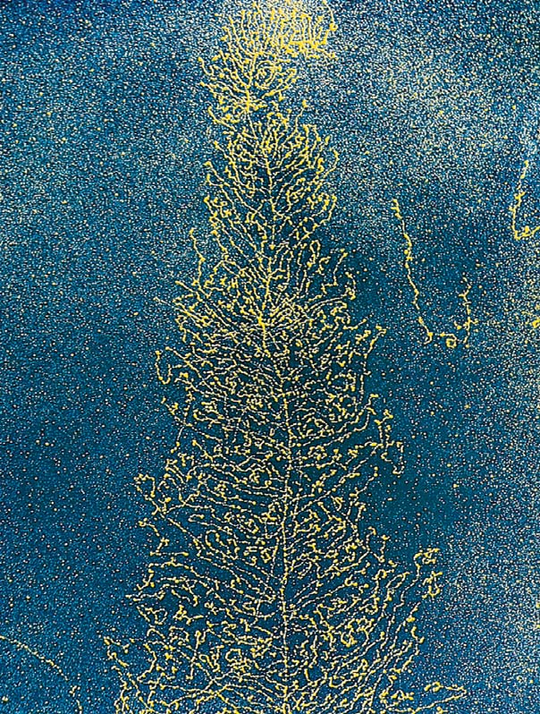
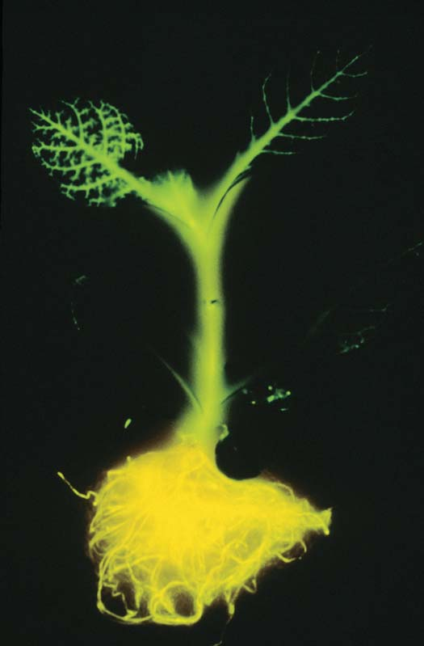
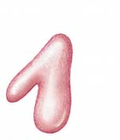
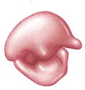
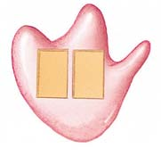
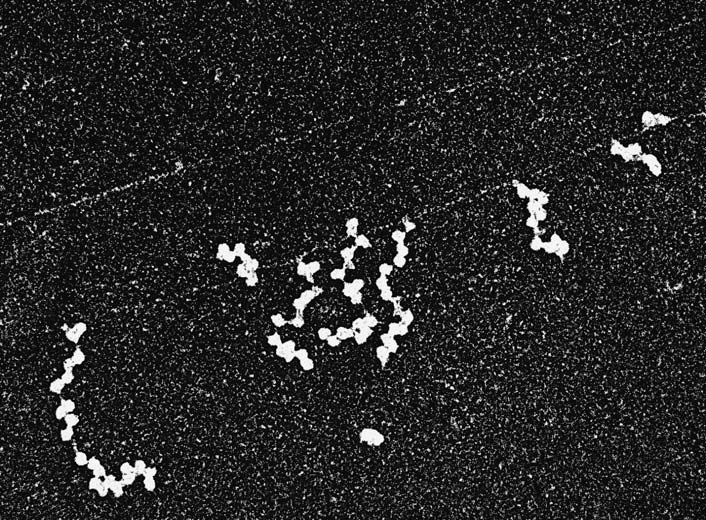
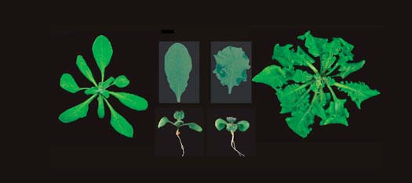
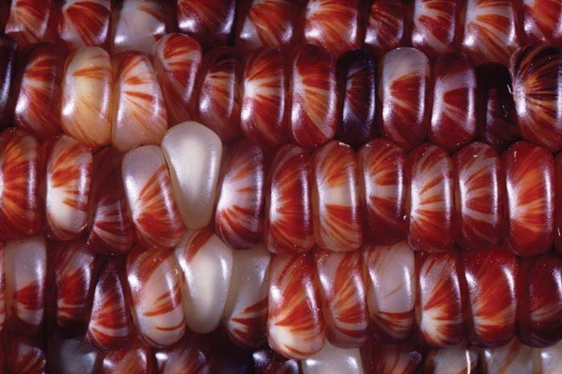

13 Expresión génica
282
CONCEPTOS CLAVE
13.1 En la década de 1940, Beadle y Tatum demostraron la relación entre genes y proteínas. 13.2 Normalmente la transmisión de información en las células va del ADN al ARN y de éste a los polipéptidos. 13.3 Una secuencia de tripletes de bases de ADN se transcribe en codones de ARNm. 13.4 Una secuencia de codones de ARNm se traduce en una secuencia de aminoácidos en un polipéptido. 13.5 Las células bacteriales y eucariotas difi eren en ciertos detalles de expresión génica. 13.6 Las mutaciones pueden causar cambios en el fenotipo.
E
n el capítulo 12, se analizó cómo realiza la célula una réplica exacta de la secuencia de nucleótidos del ADN para transferir el material genético inalterado a la próxima generación. Watson y Crick originalmente describieron las características básicas de la doble hélice del ADN, que ahora los científi cos conocen que son las mismas en todas las células estudiadas hasta la fecha, desde las células bacterianas más simples hasta las complejas células humanas. A mediados de la década de 1950, los investigadores habían determinado que la secuencia de bases en el ADN contiene la información que especifi ca todas las proteínas que necesita la célula. Sin embargo, más de una década de intensa investigación de muchos científi cos precedió a un entendimiento fundamental de cómo las células convierten la información del ADN en secuencias de aminoácidos de proteínas. Mucho de ese entendimiento provino de estudiar las funciones de genes bacterianos.
Visualización de la transcripción. En esta MET, las moléculas de ARN ( cadenas laterales ) se sintetizan como copias complementarias de un molde o plantilla de ADN ( eje central ).
Profesor Oscar Miller/Science Photo Library/Photo Researchers, Inc.

Expresión génica 283
Beadle y Tatum propusieron la hipótesis un gen-una enzima
A principios de la década de 1940 se realizó un importante avance en la comprensión de la relación entre genes y enzimas, cuando los genetistas norteamericanos George Beadle y Edward Tatum y sus asociados desarrollaron un nuevo enfoque al problema. Hasta ese momento, la mayoría de los esfuerzos se habían enfocado al estudio de los fenotipos conocidos, como el color de los ojos en la Drosophila o la pigmentación en las plantas, y en la determinación de qué reacciones bioquímicas los afectaba. Los investigadores encontraron que una serie de reacciones biosintéticas controla fenotipos específi cos, pero no fue claro si los genes mismos actuaban como enzimas o si ellos controlaban de alguna manera indirecta el funcionamiento de las enzimas. Beadle y Tatum decidieron por un enfoque opuesto. En lugar de intentar identifi car las enzimas afectadas por genes individuales, analizaron las mutaciones que interfi eren con reacciones metabólicas conocidas que producen moléculas esenciales, como aminoácidos y vitaminas. Por varias razones importantes eligieron como organismo experimental un hongo (moho), la Neurospora rosa-naranja del pan de molde. La Neurospora tipo silvestre es de fácil crecimiento en cultivos. (El adjetivo tipo silvestre se refi ere a un individuo con el fenotipo normal). La Neurospora forma todas sus moléculas biológicas esenciales cuando se desarrolla en un medio de crecimiento simple (medio mínimo) que sólo contiene azúcar, sales y la vitamina biotina. Sin embargo, una cepa de Neurospora mutante que no pueda elaborar una cierta sustancia como un aminoácido, puede continuar desarrollándose si esa sustancia se agrega al medio de crecimiento. La Neurospora también es un organismo experimental ideal porque inicialmente crece como un organismo haploide. La condición haploide le permite al investigador inmediatamente identifi car a un alelo mutante recesivo; no existe un cromosoma homólogo que pudiera portar un alelo dominante que enmascare su expresión.
Después de que Watson y Crick descubrieron la estructura del ADN, los investigadores seleccionaron las células bacterianas como los organismos modelo para estos estudios porque crecen rápida y fácilmente, y además porque contienen la cantidad mínima de ADN necesaria para el crecimiento y la reproducción. Conforme los investigadores aprendieron que todos los organismos tienen similitudes genéticas fundamentales este método de análisis fue repetidamente confi rmado en cuanto a su validez y utilidad. En este capítulo, se examina la evidencia acumulada durante la primera mitad del siglo xx que indica que la mayoría de los genes especifi can la estructura de proteínas. Entonces se considera cómo el ADN afecta al fenotipo del organismo a nivel molecular a través del proceso de expresión génica. La expresión génica implica una serie de pasos en los cuales la información en la secuencia de bases en el ADN especifi ca la composición de proteínas en la célula. Las proteínas afectan al fenotipo de alguna manera; esos efectos varían desde rasgos físicos rápidamente observables hasta sutiles cambios sólo detectables a nivel bioquímico. El primer paso importante de expresión génica es la transcripción , la síntesis de moléculas de ARN complementarias a las del ADN (vea la fotografía). El segundo paso importante es la traducción , en el cual el ARN se convierte en un molde o plantilla codifi cante para dirigir la síntesis de polipéptidos.
13.1 DESCUBRIMIENTO DE LA RELACIÓN GEN-PROTEÍNA
OBJETIVOS DE APRENDIZAJE
1 Resumir las primeras evidencias que indican que la mayoría de los genes especifi can la estructura de proteínas. 2 Describir los experimentos de Beadle y Tatum con la Neurospora .
La idea de que los genes y las proteínas están relacionados se originó a inicios del siglo xx, un poco después de que los científi cos redescubrieron los principios de Mendel. En la primera edición de su libro, Inborn Errors of Metabolism ( Errores congénitos del metabolismo )(1908), Archibald Garrod, médico y bioquímico, analizó una rara enfermedad genética llamada alcaptonuria , la que los científi cos supusieron que tenía un simple patrón hereditario recesivo. La condición implica a la ruta metabólica que rompe el aminoácido tirosina, para fi nalmente convertirlo a dióxido de carbono y agua. Un intermediario en esta ruta, el ácido homogentísico, se acumula en la orina de la gente afectada, ennegreciéndola al contacto con el aire ( FIGURA 13-1 ). Otros síntomas de la alcaptonuria incluye el posterior desarrollo de artritis y, en los hombres, piedras en la próstata. En la época de Garrod, los científi cos tenían conocimientos sobre las enzimas pero no eran reconocidas como proteínas. Garrod supuso que a las personas con alcaptonuria les faltaba la enzima que normalmente oxida al ácido homogentísico. En 1923, antes de que se publicara la segunda edición de su libro, los investigadores encontraron que la gente afectada sí carecía de la enzima oxidante del ácido homogentísico. Era correcta la hipótesis de Garrod: una mutación en este gen está asociada con la ausencia de una enzima específi ca. Un poco después, en 1926, el bioquímico norteamericano James Sumner purifi có una enzima diferente, la ureasa, y demostró que era una proteína. Ésta fue la primera clara identifi cación de una enzima como una proteína. En 1946, Sumner recibió el Premio Nobel de Química por ser el primero en cristalizar una enzima.
Enzima funcional ausente
Condición enferma
ALCAPTONURIA
El ácido homogentísico excretado en la orina, se torna negro cuando se expone al aire
Enzima funcional presente
Metabolismo normal
CO 2 H 2 O
Ácido homogentísico
Maleilacetoacetato
Tirosina
FIGURA 13-1 Un “error congénito del metabolismo” Garrod propuso que la alcaptonuria era una enfermedad genética causada por la ausencia de la enzima oxidasa del ácido homogentísico , que normalmente convierte ácido homogentísico a maleilacetoacetato. Así, el ácido se acumula en la sangre y se excreta en la orina, que se ennegrece al contacto con el aire.
284 Capítulo 13
Beadle y Tatum empezaron por exponer miles de esporas asexuales haploides, Neurosporas tipo silvestre, a la acción de rayos X o a la radiación ultravioleta para producir cepas mutantes. Primero cultivaron cada cepa irradiada en un medio de crecimiento completo, que contenía todos los aminoácidos y vitaminas normalmente elaboradas por la Neurospora . Después probaron cada cepa en el medio mínimo descrito previamente. Entre el 1% y 2% de las cepas que crecieron en el medio completo no pudieron desarrollarse al ser transferidas al medio mínimo. Beadle y Tatum razonaron que estas cepas presentaban una mutación que impedía a los hongos producir un químico esencial para el crecimiento. Pruebas adicionales de la cepa mutante en medios con diferentes combinaciones de aminoácidos, vitaminas, y otros nutrientes, permitieron a los investigadores determinar el compuesto exacto requerido ( FIGURA 13-2 ). El trabajo con la Neurospora reveló que cada cepa mutante tuvo una mutación sólo en un gen y que cada gen sólo afectó a una enzima. Beadle y Tatum establecieron esta correspondencia uno a uno entre genes y enzimas como la hipótesis un gen una enzima . En 1958, recibieron el Premio Nobel en Fisiología o Medicina por el descubrimiento de que los genes regulan eventos químicos específi cos. El trabajo de Beadle, Tatum, y de otros condujeron a un entendimiento más preciso de lo que es un gen y a realizar predicciones adicionales sobre la estructura química de los genes. La idea de que un gen codifi ca la información para producir una sola enzima perduró durante casi una década, hasta que nuevos resultados requirieron una modifi cación de esta defi nición. A fi nales de la década de 1940, los investigadores empezaron a entender que los genes no sólo controlan enzimas sino también a otras proteínas. En 1949, el químico norteamericano Linus Pauling y sus colegas demostraron que una mutación de un gen individual altera la estructura de la hemoglobina. Esta particular forma mutante de hemoglobina está asociada con la enfermedad genética anemia falciforme (que se analiza en el capítulo 16). En 1957, el bioquímico británico Vernon Ingram extendió la investigación de Pauling cuando determinó que la hemoglobina falciforme y la hemoglobina normal sólo difi eren en un aminoácido. Estudios realizados por otros científi cos demostraron que muchas proteínas están construidas de dos o más cadenas polipeptídicas, cada una de las cuales está bajo el control de un locus diferente. Por ejemplo, la hemoglobina contiene dos tipos de cadenas polipeptídicas, las subunidades a y b . En la fi gura 3-22a se puede ver la estructura de la hemoglobina. La anemia falciforme resulta de una mutación que afecta a las subunidades b . Por lo tanto, los científi cos ampliaron la defi nición de un gen, al agregar que un gen es responsable de una cadena polipeptídica. Aunque esta defi nición ha demostrado ser sólo correcta de manera parcial, como posteriormente se verá en este capítulo, los científi cos siguen defi niendo al gen en términos de su producto. A pesar de que el refi nado trabajo de Beadle y Tatum y de otros demostró que los genes se expresan en forma de proteínas, el mecanismo de expresión génica era completamente desconocido. Después del descubrimiento de Watson y Crick de la estructura del ADN, muchos científi cos investigaron para entender exactamente cómo ocurre la expresión génica. En principio se presenta un resumen general sobre la expresión génica y luego se consideran las diversas etapas del proceso con más detalle.
Repaso
■ ¿Qué es la hipótesis un gen una enzima?
■ ¿Cuáles fueron las contribuciones de cada uno de los siguientes científicos, Garrod, Beadle y Tatum, y Pauling, a la comprensión de la relación entre genes y proteínas?
EXPERIMENTO CLAVE
PREGUNTA: ¿Los genes pueden codificar enzimas?
HIPÓTESIS: Las mutaciones inducidas en la Neurospora , un tipo de moho del pan de molde, corresponden a la ausencia de enzimas funcionales.
EXPERIMENTO: Beadle y Tatum irradiaron las esporas Neurospora para inducir mutaciones. Realizaron cultivos con esas esporas en un medio de crecimiento completo que contiene todos los aminoácidos, vitaminas, y otros nutrientes que normalmente la Neurospora elabora para sí misma. Para identifi car las necesidades nutricionales en las cepas mutantes, realizaron pruebas de crecimiento en medios mínimos suplementados con vitaminas o aminoácidos individuales.
Exposición de las esporas Neurospora a luz ultravioleta o a rayos X
Crecimiento de hongos (micelio)
Cada espora irradiada se utiliza para establecer cultivos en un medio de crecimiento completo (medio mínimo más aminoácidos, vitaminas, etc.).
RESULTADOS Y CONCLUSIÓN: Transfi rieron algunas células de hongos a cada uno de los tres tubos: uno con un medio mínimo más vitaminas; otro con un medio mínimo más aminoácidos; y el restante con un medio mínimo (el control). En este ejemplo los mohos mutantes crecieron en el medio mínimo sólo si era suplementado con aminoácidos.
Transferencia de células a un medio mínimo más vitaminas.
Transferencia de células a un medio mínimo más aminoácidos.
Transferencia de células a un medio mínimo (control).
Para determinar cuál era el aminoácido que los mohos mutantes habían perdido la habilidad de sintetizar, transfi rieron los hongos mutantes a tubos con un medio mínimo y sólo un aminoácido.
Medio mínimo más arginina
Medio mínimo más triptófano
Medio mínimo más lisina
Medio mínimo más leucina
Medio mínimo más otros aminoácidos
En este ejemplo, sólo el medio con el aminoácido arginina permitió el crecimiento, lo que indica que la mutación afectó alguna parte de la ruta biosintética de la arginina. Beadle y Tatum entonces identifi caron el paso de la enzima catalizada que se bloqueó en la síntesis de la arginina. Con base en muchos experimentos similares, concluyeron que cada gen controla la producción de una enzima individual.
FIGURA 13-2 Los experimentos de Beadle-Tatum
Expresión génica 285
lipéptido (vea la fi gura 13-4). Este proceso se llama traducción porque implica la conversión del “lenguaje de ácido nucleico” en la molécula de ARNm al “lenguaje de aminoácido” de la proteína. En la traducción de las instrucciones genéticas para formar un polipéptido, cada secuencia de tres bases nucleótidas consecutivas en el ARNm, llamada codón , especifi ca un aminoácido. Por ejemplo, un codón que corresponde al aminoácido fenilalanina es 5 ¿¬ UUC ¬ 3 ¿ . Como cada codón consiste en tres nucleótidos, el código se describe como un código de tripletes . A las asignaciones de los codones para aminoácidos y a las señales de inicio y de parada del proceso, se les conoce en conjunto como el código genético ( FIGURA 13-5 ).
13.2 FLUJO DE INFORMACIÓN DEL ADN A LA PROTEÍNA: UN RESUMEN GENERAL
OBJETIVOS DE APRENDIZAJE
3 Esbozar el fl ujo de información genética en las células, del ADN al ARN y de éste al polipéptido. 4 Comparar las estructuras del ADN y del ARN. 5 Explicar por qué se dice que el código genético es redundante y virtualmente universal y analizar cómo pueden refl ejar esas características su historia evolutiva.
Aunque la secuencia de bases de ADN determina la secuencia de aminoácidos en polipéptidos, las células no utilizan la información en el ADN directamente. En su lugar, un ácido nucleico relacionado, el ácido ribonucleico (ARN) , vincula al ADN con las proteínas. La expresión de un gen que codifi ca a una proteína, implica primero la realización de una copia de ARN con base en la información del ADN. Esta copia de ARN es la que proporciona la información que dirige la síntesis del polipéptido. Al igual que el ADN, el ARN es un polímero de nucleótidos, pero tiene algunas diferencias importantes ( FIGURA 13-3 ). Aunque normalmente el ARN es una cadena simple, algunas moléculas pueden tener secuencias complementarias en las regiones internas que le permiten plegarse hacia atrás y emparejarse para formar cortos segmentos de cadena doble. Como se muestra en la fi gura 13-3, el azúcar en el ARN es la ribosa , que es similar a la desoxirribosa del ADN pero tiene un grupo hidroxilo en la posición 2 ¿ . (Compare la ribosa con la desoxirribosa del ADN, que se muestra en la fi gura 12-4, que tiene un hidrógeno en la posición 2 ¿ ). La base uracilo sustituye a la timina y, al igual que la timina, es una pirimidina que puede formar dos enlaces de hidrógeno con la adenina. Por lo tanto, el uracilo y la adenina son un par complementario.
El ADN se transcribe para formar ARN
El proceso mediante el cual se sintetiza la cadena de ARN se parece a la replicación del ADN en que la secuencia de bases que lo conforma está determinada por el emparejamiento de bases con una de las cadenas del ADN, la cadena codifi cante o molde ( FIGURA 13-4 ). Como la síntesis de ARN implica tomar la información de un tipo de ácido nucleico (ADN) y copiarlo como otro ácido nucleico (ARN), entonces este proceso se llama transcripción (“copiado”). Se transcriben tres principales tipos de moléculas de ARN: ARN mensajero, ARN de transferencia y ARN ribosómico. El ARN mensajero (ARNm) consta de una sola cadena del ARN que porta la información para elaborar una proteína. Cada uno de los casi 45 tipos de ARN de transferencia (ARNt) es una cadena simple de ARN que puede plegarse hacia atrás sobre sí misma para tomar una forma específi ca. Cada tipo de ARNt se une con sólo un tipo de aminoácido y lo transfi ere al ribosoma . (Debido a que existen más tipos de moléculas de ARNt que aminoácidos, entonces muchos aminoácidos se transfi eren por dos o más tipos de moléculas de ARNt). El ARN ribosómico (ARNr) , que tiene forma globular, es una parte importante de la estructura de las ribosomas y tiene funciones catalíticas necesarias durante la síntesis proteínica.
El ARN se traduce para formar un polipéptido
Posterior al proceso de transcripción, la información copiada en el ARNm se utiliza para especifi car la secuencia de aminoácidos de un po-
P
P
P
P
Ribosa Uracilo
O
O
–O
N
Adenina
Citosina
Guanina
Ribosa
Ribosa
Ribosa
N
N N
N
N
N
N
N N
N
NH 2
NH 2 O
O
O
O
O
O
O
O
O
O
O
OH
CH 2 NH 2
N
O
5 ′
3 ′
CH 2
CH 2
CH 2
O
O
O
O
OH
OH
OH
OH
–O
–O
–O
O
O
FIGURA 13-3 La estructura de nucleótidos del ARN Las subunidades nucleótidas del ARN están unidas por enlaces fosfodiéster 5 ¿ ¡ 3 ¿ , semejantes a los que se encuentran en el ADN. Están presentes la adenina, la guanina y la citosina, como en el ADN, pero la base uracilo reemplaza a la timina. Todos los cuatro tipos de nucleótidos contienen azúcar ribosa de 5 carbonos, que tiene un grupo hidroxilo ( azul ) en su átomo de carbono 2 ¿ .
286 Capítulo 13
Los ARN de transferencia son partes cruciales de la maquinaria de decodifi cación porque actúan como “adaptadores” que conectan aminoácidos y ácidos nucleicos. Este mecanismo es posible porque cada ARNt se puede (1) unir con un aminoácido específi co y (2) reconocer el apropiado codón ARNm para ese aminoácido particular ( FIGURA 13-6 ). Un ARNt particular puede reconocer un codón particular porque tiene una secuencia de tres bases, llamada el anticodón , que forma enlaces de hidrógeno con el codón ARNm mediante emparejamiento complementario de bases. En el ejemplo, el anticodón exacto que es complementario al codón para fenilalanina es 3 ¿¬ AAG ¬ 5 ¿ . La traducción requiere que cada anticodón ARNt tenga enlaces de hidrógeno con el codón ARNm complementario y que los aminoácidos transportados por los ARNt estén acoplados en el orden especifi cado por la secuencia de codones en el ARNm. Los ribosomas , el sitio donde ocurre la traducción, son organelos compuestos de dos diferentes subunidades, cada una de las cuales contiene proteína y ARNr. (La estructura y función de los ribosomas se analizó en el capítulo 4). Los ribosomas se adhieren al extremo 5 ¿ del ARNm y viajan con él, permitiendo a los
La síntesis de proteínas requiere de dos importantes etapas: ADN ¬¬ ¡ ARN ¬¬ ¡ proteína
A
T A A A T T G G C C C
A
A
T T T A
A A A U U U U U U U G G G G
C C
C C C
G G
G
A U U U A A C C G G G
5 ′
Met Tre Cis Glu Cis Fen
3 ′
3 ′
5 ′
3 ′
5 ′
C
O
OH H 2 N
Codón 1 Codón 2 Codón 3 Codón 4 Codón 5 Codón 6
Cadena no codificante
Cadena codificante (molde o plantilla)
Traducción
Transcripción
ARNm (copia complementaria de la cadena codificante de ADN)
Polipéptido
ADN
FIGURA 13-4 Resumen general de la transcripción y traducción En la transcripción, el ARN mensajero se sintetiza como una copia complementaria de una de las cadenas del ADN, la cadena codifi cante o molde. El ARN mensajero porta información genética en forma de conjuntos de tres bases, o codones, cada uno de los cuales corresponde a un aminoácido específi co. Los codones se traducen consecutivamente,
determinando así la secuencia lineal de aminoácidos en la cadena polipeptídica. La traducción requiere ARNt y ribosomas ( que no se muestran ). La fi gura ilustra la transcripción y la traducción en bacterias. En las eucariotas, la transcripción ocurre en el núcleo y la traducción sucede en el citosol.
PUNTO CLAVE
transcripción traducción
= Codón de parada
= Codón de inicio
U
U
C
A
G
C A G
U C A G
U C A G
U C A G
U C A G
Segunda letra
Primera letra (extremo 5 ′ )
Tercera letra (extremo 3 ′ )
UUU UUC UUA UUG
UGU UGC UGA UGG
UAU UAC UAA UAG
UCU UCC UCA UCG
CUU CUC CUA CUG
CGU CGC CGA CGG
CAU CAC CAA CAG
CCU CCC CCA CCG
AUU AUC AUA AUG
AGU AGC AGA AGG
AAU AAC AAA AAG
ACU ACC ACA ACG
GUU GUC GUA GUG
GGU GGC GGA GGG
GAU GAC GAA GAG
GCU GCC GCA GCG
Fen
Leu Ser
Tir Cis
Trp
Leu Pro
His
Glu Arg
Ile
Met inicio
Tre Asn Ser
Lys Arg
Val Ala Gli
Asp
Glu
Parar Parar
Parar
FIGURA 13-5 Código genético El código genético especifi ca todas las posibles combinaciones de las tres bases que componen los codones en el ARNm. De los 64 posibles codones, 61 especifi can aminoácidos (vea la fi gura 3-17 para una explicación de las abreviaciones). El codón AUG especifi ca el aminoácido metionina y también indica al ribosoma que inicia el proceso de la traducción (“inicio”). Los tres codones, UAA, UGA y UAG, no especifi can aminoácidos; son señales para terminar la síntesis del polipéptido (“parada”).
▲
Expresión génica 287
fuera de células vivas en sistemas libres de células purifi cados derivados de la bacteria Escherichia coli . Nirenberg y Matt haei obtuvieron la primera evidencia experimental que indican la asignación de tripletes a aminoácidos específi cos. Construyeron moléculas de ARNm artifi ciales mediante conocidas secuencias de bases, y determinaron qué aminoácidos se incorporarían en la proteína. Por ejemplo, cuando adicionaron el ácido poliuridílico del ARNm sintético (UUUUUUUUU . . .) a una mezcla de ribosomas purifi cados, aminoacil ARNt (aminoácidos acoplados a sus respectivos ARNt), y esenciales cofactores necesitados para sintetizar polipéptidos, entonces sólo la fenilalanina fue incorporada en la cadena polipeptídica resultante. La inferencia fue inevitable de que el triplete UUU codifi ca la fenilalanina. Experimentos similares probaron que el ácido poliadenílico (AAAAAAAAA . . .) codifi ca el polipéptido llamado lisina y que el ácido policitidílico (CCCCCCCCC . . .) codifi ca el polipéptido prolina. Investigadores como H. Gobind Khorana, de la Universidad de Wisconsin, emplearon polímeros de nucleótidos mixtos (como un polímero aleatorio de A y C) como mensajeros artifi ciales y asignaron los otros codones para especifi car aminoácidos. Sin embargo, tres de los codones, UAA, UGA, y UAG, no especifi caron aminoácido alguno. Ahora se conoce que esos codones son las señales que terminan la secuencia de codifi cación para una cadena polipeptídica. En 1967, el código genético fue completamente “descifrado”, y los científi cos identifi caron las asignaciones codifi cadas de todos los 64 posibles codones que se muestran en la fi gura 13-5. En 1968, Nirenberg y Khorana recibieron el Premio Nobel en Fisiología o Medicina por su trabajo al descifrar el código genético.
ARNt adherirse secuencialmente a los codones del ARNm. De esta manera los aminoácidos portados por los ARNt ocupan su propia posición para unirse mediante enlaces peptídicos en la secuencia correcta para formar un polipéptido.
En la década de 1960 los biólogos descifraron el código genético
Antes de que se descifrara el código genético, los científi cos se habían interesado en cómo podrían trabajar un código genético. El modelo del ADN de Watson y Crick mostró que el código genético era una secuencia lineal de cuatro diferentes nucleótidos. Si cada nucleótido codifi cara un solo aminoácido, entonces el código genético sólo podría especifi car 4 aminoácidos, no los 20 que se encuentran en la muy amplia diversidad de proteínas en la célula. Los científi cos vieron que las bases de ADN podrían servir como un “alfabeto” de cuatro letras y supusieron que esto podría lograrse mediante combinaciones de tres letras de las cuatro bases, para así formar un total de 64 “palabras”, más que sufi cientes para especifi car a todos los aminoácidos que existen naturalmente. En 1961, Crick y el científi co británico Sydney Brenner concluyeron de la evidencia experimental que el código utilizaba tripletes de bases no traslapados. Predijeron que el código se lee, un triplete a la vez, desde un punto inicial fi jo que establece el marco de lectura para el mensaje genético. El bioquímico estadounidense Marshall Nirenberg y su investigador postdoctoral, Heinrich Matt haei, estudiaron la síntesis proteínica
A G A
5 ′ 3 ′
A C
G
C A C
C U U A A G C A A C
G U U G C U G A G G U C
A G A C C
C G A G
U C C A U U U
G
G C
G A
G
G
G G A
A
A U
G
G A A
C
C
C
U
T
3 ′ 5 ′ O C
N H
H
O
Anticodón
Lazo 2
Lazo 3
Nucleótidos modificados
Extremo 3 ′ OH
Extremo aceptor de aminoácido
P Extremo 5 ′
Lazo 1
Lazo 3
Lazo 1
Lazo 2
Anticodón
Enlaces de hidrógeno
Anticodón
Aminoácido (fenilalanina)
La configuración 3-D de una molécula de ARNt está determinada por los enlaces de hidrógeno que se forman entre las bases complementarias.
Un lazo contiene el anticodón; estas bases no apareadas se emparejan con un codón de ARNm complementario. El aminoácido se adhiere al nucleótido terminal en el extremo 3’ hidroxilo (OH).
Este diagrama estilizado de un aminoacil ARNt muestra que el aminoácido se adhiere al ARNt mediante su grupo carboxilo, dejando expuesto su grupo amino para la formación de enlaces péptidos. FIGURA 13-6 Tres representaciones de una molécula de ARNt
288 Capítulo 13
Los científi cos han descubierto algunas excepciones menores a la universalidad del código genético. En varios protozoos unicelulares, UAA y UGA codifi can al aminoácido glutamina en vez de funcionar como señales de parada. Otras excepciones se localizan en las mitocondrias, que contienen su propio ADN y la maquinaria de síntesis proteínica para algunos genes. Estas pequeñas diferencias de codifi cación varían con el organismo, pero considere que en cada caso, todas las otras asignaciones de codifi cación son idénticas a aquellas del código genético estándar.
El código genético es redundante
Dados 64 posibles codones y sólo 20 aminoácidos comunes, no es sorprendente que más de un codón especifi que ciertos aminoácidos. Esta redundancia en el código genético tiene ciertos patrones característicos. Los codones CCU, CCC, CCA y CCG son “sinónimos” porque todos ellos codifi can el aminoácido prolina. La única diferencia entre los 4 codones implica al nucleótido en el extremo 3 ¿ del triplete. Aunque el código puede leer tres nucleótidos a la vez, sólo los primeros dos nucleótidos parecen contener información específi ca para prolina. Un patrón similar se puede ver en algunos otros aminoácidos. Sólo la metionina y el triptófano están especifi cados por un solo codón. Cada uno de los otros aminoácidos se especifi ca mediante 2 a 6 diferentes codones. Crick fue el primero en proponer la hipótesis del balanceo (tambaleo) para referirse a esta aparente violación de las reglas de emparejamiento de bases. Razonó que el tercer nucleótido de un anticodón de ARNt (que es la base 5 ¿ de la secuencia del anticodón) algunas veces puede formar enlaces de hidrógeno con más de un tipo de tercer nucleótido (la base 3 ¿ ) de un codón. Después, los investigadores establecieron esto experimentalmente al determinar las secuencias de anticodón de moléculas de ARNt y probar sus especifi cidades en sistemas artifi ciales. Algunas ARNt se unen exclusivamente a un codón, pero otras moléculas ARNt se emparejan por separado con hasta tres codones que difi eren en su tercer nucleótido pero que especifi can el mismo aminoácido. Así, la hipótesis del balanceo considera la posible variación en el emparejamiento de bases entre la tercera base de un codón y la correspondiente base en su anticodón. Los resultados “balancean” en varias formas aceptables de emparejamiento de bases entre el ARNm y el ARNt.
Repaso
■ Realice un diagrama de fl ujo sencillo donde muestre las relaciones entre : ARN, traducción, ADN, transcripción, y polipéptido.
■ ¿En qué son similares las estructuras de ADN y ARN? ¿En qué son diferentes?
13.3 TRANSCRIPCIÓN
OBJETIVOS DE APRENDIZAJE
6 Comparar los procesos de transcripción y la replicación del ADN, identifi cando similitudes y diferencias. 7 Comparar ARNm bacterianos y eucariotas, y explicar el signifi cado funcional de sus diferencias estructurales.
Ahora que se ha presentado un resumen general del fl ujo de información del ADN al ARN y de éste al polipéptido, se examinará todo el proceso
Recuerde que el código genético es un código ARNm. Las secuencias anticodón de ARNt, también como la secuencia de ADN de la cual el mensaje es transcrito, son complementarias a las secuencias en la fi gura 13-5. Por ejemplo, el codón de ARNm para el aminoácido de metionina es 5 ¿¬ AUG ¬ 3 ¿ , que es transcrito de la secuencia de bases de ADN 3 ¿¬ TAC ¬ 5 ¿ , y el correspondiente anticodón de ARNt es 3 ¿¬ UAC ¬ 5 ¿ .
El código genético es virtualmente universal
Quizás la característica individual más notable del código es que es esencialmente universal. Durante años, los biólogos examinaron el código genético en diversas especies y encontraron que es el mismo en organismos tan diferentes como bacterias, secuoyas, medusas, y humanos ( FI-
GURA 13-7 ). Esos descubrimientos sugirieron fi rmemente que el código es un antiguo legado que evolucionó temprano en la historia de la vida (se analiza en el capítulo 21).
FIGURA 13-7 Planta de tabaco manipulada con ingeniería genética Esta planta brilla al expresar el gen de luciferasa de una luciérnaga. La luciferasa es una enzima que cataliza una reacción que produce un fl ash de luz. Este experimento clásico indicó que los genes animales se pueden expresar en las plantas.
Keith V. Wood/Visuals Unlimited

Expresión génica 289
puede controlar cuáles genes son transcritos en un momento determinado. Normalmente, los promotores bacterianos se componen de casi 40 bases de largo y se encuentran en el ADN ascendente del punto en el cual la transcripción iniciará. Una vez que la ARN polimerasa ha reconocido al promotor correcto, desenrolla la doble hélice del ADN e inicia la transcripción ( FIGURA 13-9 ). A diferencia de la síntesis de ADN, la síntesis de ARN no requiere un cebador. Sin embargo, la transcripción requiere varias proteínas además de la ARN polimerasa ; esto se analiza en el capítulo 14. El primer nucleótido en el extremo 5 ¿ de una nueva cadena de ARN inicialmente retiene su grupo trifosfato (vea la fi gura 13-8). Sin embargo, durante la etapa de elongación de la transcripción, como cada nucleótido adicional está incorporado en el extremo 3 ¿ de la molécula de ARN en crecimiento, dos de sus fosfatos son removidos en una reacción exergónica que permite al fosfato restante convertirse en parte de la columna de azúcar fosfato (como en la replicación de ADN). El último nucleótido incorporado tiene un grupo 3 ¿ -hidroxilo. La elongación del ARN continúa hasta la terminación , cuando la ARN polimerasa reconoce una secuencia de terminación que con-
con mayor detalle. La primera etapa en el fl ujo de información del ADN al polipéptido es la transcripción de una secuencia de nucleótidos de ADN en una secuencia de nucleótidos de ARN. El biólogo Roger Kornberg, de la Universidad de Stanford, trabajó cuidadosamente los detalles de la transcripción, por lo que fue galardonado con el Premio Nobel de Química 2006. En la transcripción eucariota, la mayor parte de la síntesis de ARN requiere una de las tres ARN polimerasas , enzimas que están presentes en todas las células. Las tres ARN polimerasas difi eren en los tipos de síntesis de ARN que catalizan. La ARN polimerasa I cataliza la síntesis de varias clases de moléculas de ARNr que son componentes del ribosoma; la ARN polimerasa II de ARN cataliza la producción del ARNm codifi cante de proteína; y la ARN polimerasa III cataliza la síntesis de ARNt y una de las moléculas de ARNr. Las ARN polimerasas requieren ADN como molde o plantilla y tienen muchas similitudes con las ADN polimerasas que se analizan en el capítulo 12. Al igual que las ADN polimerasas, las ARN polimerasas realizan la síntesis en la dirección 5 ¿ ¡ 3 ¿ ; es decir, se inician en el extremo 5 ¿ de la molécula de ARN sintetizada y continúan agregando nucleótidos en el extremo 3 ¿ hasta que la molécula esté completa ( FI-
GURA 13-8 ). Las ARN polimerasas utilizan nucleótidos con tres grupos fosfato (por ejemplo, ATP y GTP) como sustratos para la reacción de polimerización. Conforme los nucleótidos se enlazan al extremo 3 ¿ del ARN, se eliminan dos de los fosfatos. Estas reacciones son fi rmemente exergónicas y no necesitan la entrada de energía extra. Recuerde del capítulo 12 que siempre que las moléculas de ácido nucleico se asocian mediante emparejamiento de bases complementario, las dos cadenas son antiparalelas . Así como las dos cadenas emparejadas del ADN son antiparalelas, la cadena codifi cante del ADN y la cadena del ARN complementaria también son antiparalelas. Por lo tanto, cuando ocurre la transcripción, conforme el ARN se sintetiza en su dirección 5 ¿ ¡ 3 ¿ , el código del ADN se lee en su dirección 3 ¿ ¡ 5 ¿ . Convencionalmente, los científi cos se refi eren a una secuencia de bases en un gen o a la secuencia de ARNm transcrita de ella como ascendente o descendente desde algún punto de referencia. Ascendente es hacia el extremo 5 ¿ de la secuencia de ARNm o el extremo 3 ¿ de la cadena codifi cante del ADN. Descendente es hacia el extremo 3 ¿ del ARN o al extremo 5 ¿ de la cadena codifi cante del ADN.
5 ′ — A — T — G — A — C — T — 3 ′ Cadena no codificante del ADN Cadena de ADN molde
ARN
3 ′ — T — A — C — T — G — A — 5 ′
Dirección de transcripción
5 ′ — A — U — G — A — C — U — 3 ′
Ascendente Descendente
La síntesis de ARNm incluye iniciación, elongación y terminación
En bacterias y eucariotas, aquella secuencia nucleótida en el ADN a la que se unen inicialmente la ARN polimerasa y las proteínas asociadas se le llama promotor . Como el promotor no está transcrito, la ARN polimerasa se mueve más allá del promotor para empezar la transcripción de la secuencia del ADN que codifi ca la proteína. Diferentes genes pueden tener ligeros cambios en las secuencias promotoras, así la célula
P
O
O
O
P O
O
O
P O
O
O
P O
O O
O
P
O O
O O
O O
O
O OH O
Extremo 5 ′
Extremo 3 ′ Dirección 5 ′
Dirección 3 ′
P
P
P
P
Crecimiento de la cadena de ARN Cadena molde o plantilla de ADN
– O
– O
CH 2
CH 2
O
O O
O –
CH 2
U
G
A
A
C
T
G
H H
H H H
H H
O –
O –
O –
O –
CH 2
CH 2
CH 2
OH OH
OH OH
Nucleótido agregado a la cadena en crecimiento por una ARN polimerasa
FIGURA 13-8 Animada Vista molecular de la transcripción Ingreso de tres nucleótidos con tres fosfatos que se emparejan con sus bases complementarias en la cadena molde de ADN ( derecha ). La ARN polimerasa transfi ere dos fosfatos ( que no se muestran ) de cada nucleótido y forma un enlace covalente con el fosfato restante al extremo 3 ¿ de la cadena de ARN en crecimiento. Así, el ARN, al igual que el ADN, se sintetiza en la dirección 5 ¿ ¡ 3 ¿ .
290 Capítulo 13
cadena sea transcrita para un gen dado no signifi ca que la misma cadena de ADN siempre es el molde para todos los genes a lo largo de una molécula de ADN cromosómica. En lugar de eso, una cadena particular puede servir como la cadena molde para algunos genes y como cadena no codifi cante para otros ( FIGURA 13-10 ).
El ARN mensajero contiene secuencias de bases que no codifi can directamente a la proteína
Una molécula de ARNm completa tiene más información que la secuencia de nucleótidos que codifi ca una proteína. La FIGURA 13-11 muestra un típico ARNm bacteriano. (Las características únicas del ARNm eucariota se analizan en la próxima sección). En bacterias y eucariotas, la ARN polimerasa inicia la transcripción de un gen ascendente de la secuencia de ADN codifi cante para proteína. Como resultado, el ARNm tiene una secuencia líder no codifi cante en su extremo 5 ¿ . La secuencia líder tiene sitios reconocidos de uniones de ribosomas, que posicionan adecuadamente a los ribosomas para que traduzcan el mensaje. El codón iniciador sigue a la secuencia líder e indica el comienzo de la secuencia codifi cante que contiene el mensaje real para el polipéptido. A diferencia de la codifi cación en células eucariotas, en las células bacterianas es común que más de un polipéptido sea codifi cado por una sola mo-
siste en una secuencia de bases en el molde del ADN específi ca (para la terminación o parada del proceso). Esta señal conduce a una separación entre la ARN polimerasa molde del ADN y el recién sintetizado ARN. La terminación de la transcripción ocurre por diferentes mecanismos en bacterias y eucariotas. En las bacterias, la transcripción se detiene al encontrar la secuencia de terminación. Cuando la ARN polimerasa llega a la secuencia de terminación, libera el ADN codifi cante y la nueva cadena del ARN. En las células eucariotas, la ARN polimerasa agrega nucleótidos a la molécula de ARNm después de que pasa la secuencia de terminación. El extremo 3 ¿ del ARNm queda separado de la ARN polimerasa cerca de 10 a 35 nucleótidos después de la secuencia de terminación. Sólo una cadena en una región del ADN codifi cante de proteína se utiliza como molde. Por ejemplo, considere un segmento de ADN que contiene la siguiente secuencia de bases de ADN en la cadena molde:
3 ¿¬ TAACGGTCT ¬ 5 ¿
Si se utilizara la cadena de ADN complementaria
5 ¿¬ ATT GCCAGA ¬ 3 ¿
como molde, se produciría un mensaje que especifi ca una proteína totalmente diferente (y posiblemente no funcional). Sin embargo, que una
El ARNm se sintetiza en la dirección de 5 ¿ a 3 ¿ conforme la cadena molde de la molécula del ADN se lee en la dirección de 3 ¿ a 5 ¿ .
5 ′ 3 ′
5 ′
5 ′
3 ′ 5 ′
5 ′
5 ′ 3 ′ 3 ′ 5 ′
5 ′ 3 ′ 3 ′ 5 ′
5 ′ 3 ′ 3 ′ 5 ′
3 ′
3 ′
3 ′
Iniciación. La ARN polimerasa desenrolla la doble hélice del ADN e inicia la síntesis del ARN.
Elongación. Los nucleótidos adicionales se agregan al extremo 3 ′ de la molécula de ARN. La doble hélice de ADN se vuelve a formar después de la transcripción.
La elongación continúa.
Región del promotor
La ARN polimerasa se une a la región promotora en el ADN
Dirección de la transcripción
Enrollamiento de ADN
ARN transcrito
Desenrollamiento de ADN
ARN polimerasa
ADN
ADN
Cadena molde o plantilla de ADN
Secuencia de terminación (o parada)
ARN transcrito
1
2
3
Terminación. La ARN polimerasa reconoce la secuencia de terminación. El ARN transcrito y la ARN polimerasa son liberados.
4
FIGURA 13-9 Animada Un resumen general de transcripción: Iniciación, elongación y terminación
PUNTO CLAVE
Expresión génica 291
de ARNm mediante tres grupos fosfato. Los ribosomas eucariotas no pueden unirse a un mensaje sin caperuza. La caperuza también puede proteger el ARNm de ciertos tipos de degradación, y por lo tanto, puede explicar parcialmente por qué los ARNm eucariotas son mucho más estables que los ARNm bacterianos. Los ARNm eucariotas tienen vidas medias entre 30 minutos y 24 horas. La vida media promedio de una molécula de ARNm en una célula mamífera es de cerca de 10 horas comparada con 2 minutos en una célula bacteriana. Una segunda modifi cación del ARNm eucariota, conocida como poliadenilación , puede ocurrir en el extremo 3 ¿ de la molécula. Normalmente, cerca del extremo 3 ¿ de un mensaje completo está una secuencia de bases que sirve como una señal para agregar varios nucleótidos que contengan adenina, conocida como cola de poliA (de poliadenilado ). Las enzimas en el núcleo reconocen la señal para la cola de poliA y cortan la molécula de ARNm en ese sitio. A este proceso lo sigue la adición enzimática de una cuerda de 100 a 250 nucleótidos de adenina al extremo 3 ¿ . La poliadenilación parece tener varias funciones: ayuda a exportar el ARNm del núcleo, estabiliza algún ARNm contra la degradación en el citosol (entre más larga la cola de poliA, más permanece la molécula en el citosol), y facilita el inicio de la traducción ayudando a los ribosomas a reconocer el ARNm.
lécula de ARNm (vea el capítulo 14). En el extremo de cada secuencia codifi cante, un codón de parada indica el extremo de la proteína. Los codones de parada, UAA, UGA, y UAG, fi nalizan mensajes bacterianos y eucariotas. Son seguidos por secuencias de terminación no codifi cantes 3 ¿ , que varían en longitud.
El ARNm eucariota se modifi ca después de la transcripción y antes de la traducción
Existen otras diferencias entre el ARNm bacteriano y el eucariota. Los ARNm bacterianos se utilizan inmediatamente después de la transcripción, sin más procesamiento. En las eucariotas, la copia original, llamada ARNm precursor , o pre-ARNm , se modifi ca en diversas formas mientras permanece en el núcleo. Esa modifi cación postranscripcional y las actividades de procesamiento producen ARNm maduro para transporte y traducción. La modifi cación del mensaje eucariota inicia cuando el transcrito de ARN en crecimiento es de aproximadamente 20 a 30 nucleótidos de largo. En ese punto, las enzimas adicionan una caperuza 5 ¿ al extremo 5 ¿ de la cadena de ARNm ( FIGURA 13-12 ). La caperuza está en la forma de un nucleótido inusual, la 7 metilguanosina, que está unida a la copia
ARNm transcrito
ARNm transcrito Región promotora ARN polimerasa
ARNm transcrito
Gen 1
Gen 2
Gen 3
Región promotora Región promotora
5 ′
3 ′
5 ′
3 ′
5 ′
5 ′
3 ′ 3 ′
3 ′
5 ′
FIGURA 13-10 La cadena molde para un gen puede ser la cadena no codifi cante para otro gen Sólo una de las dos cadenas es transcrita para un gen dado, pero la cadena opuesta puede ser transcrita para un gen vecino. Cada transcripción o copia inicia en su propia región promotora ( naranja ). La fl echa naranja asociada con cada región promotora indica la dirección de la transcripción.
ADN
ARNm
Polipéptido
5 ′
3 ′
Región promotora Región transcrita Secuencia de terminación del ARNm
Secuencias codificantes de proteínas Región traducida
Secuencias líderes ascendentes
Secuencias terminales descendentes
O – P – O – P – O – P – O –
Codón iniciador Codón de parada
–OH Extremo 3 ′ Extremo 5 ′
5 ′
3 ′
FIGURA 13-11 ARNm bacteriano Esta fi gura compara el ARNm bacteriano con la región del ADN de la que fue transcrito. La ARN polimerasa reconoce, pero no transcribe, las secuencias promotoras del ADN. La iniciación de la síntesis de ARN ocurre de cinco a ocho bases abajo del promotor. Los sitios de reconocimiento de los ribosomas se localizan en las secuencias líderes 5 ¿ arriba del ARNm. Las secuencias codifi cantes de proteínas inician en el codón iniciador, que sigue a las secuencias líderes, y fi nalizan en un codón de parada descendente cerca del extremo 3 ¿ de la molécula de ARNm. Las secuencias terminales descendentes, que varían en longitud, siguen las secuencias codifi cantes de los polipéptidos.
292 Capítulo 13
Un típico gen eucariota puede tener múltiples exones e intrones, aunque el número varía. Por ejemplo, el gen humano de la b -globina, que produce una componente de la hemoglobina, contiene 2 intrones y 3 exones; el gen humano para albúmina tiene 14 intrones y 15 exones; y el gen humano para titina, la mayor proteína conocida, que se encuentra en las células musculares, contiene 233 intrones y 234 exones. En muchos casos, las longitudes combinadas de las secuencias de intrones son mucho más grandes que las longitudes combinadas de los exones. Por ejemplo, el gen ovoalbúmina contiene cerca de 7700 pares base, mientras que el total de todas las secuencias de exones tiene sólo 1859 pares base.
Las secuencias codifi cantes y las no codifi cantes son transcritas de los genes eucariotas Una de las más grandes sorpresas en la historia de la biología molecular fue el descubrimiento de que la mayor parte de los genes eucariotas tienen secuencias codifi cantes interrumpidas : largas secuencias de bases dentro de las secuencias codifi cantes de proteínas del gen no codifi can a los aminoácidos del producto polipéptido fi nal. Las regiones no codifi cantes dentro del gen se llaman intrones (secuencias in terpuestas), como opuestas a exones (secuencias ex presadas), que son partes de la secuencia codifi cante para proteína.
Después de la transcripción en eucariotas, el pre-ARNm experimenta una extensa modifi cación para producir ARNm funcional maduro.
1
2
3
4
Cadena molde del ADN (codificante) Transcripción, caperuza del extremo 5 ′
Promotor
G – P – P – P
Codón de parada
Extremo 5 ′
1er. exón 1er. intrón
1er. intrón
2o. exón 2o. intrón
2° intrón
3er. exón
1er. exón 2o. exón 3er. exón
Caperuza de 7-metilguanosina
Secuencia de terminación de ARNm
Codón iniciador
Extremo 5 ′
Extremo 5 ′
–AAA…
–AAA… Cola de poliA Extremo 3 ′
Extremo 5 ′
–AAA… Cola de poliA Extremo 3 ′
Pequeño complejo nuclear de ribonucleoproteína
Región codificante de proteínas
Región codificante de proteínas
Transporte a través de la envoltura nuclear hacia el citosol
Poro nuclear
Citosol
Codón de parada Codón iniciador
Formación de pre-ARNm
ARNm maduro en el núcleo
ARNm maduro en el citosol
Procesamiento de pre-ARNm (adición de cola de poliA y eliminación de intrones)
Envoltura nuclear
G – P – P – P
G – P – P – P
G – P – P – P
Cola de poliA Extremo 3 ′
FIGURA 13-12 Animada Modifi cación postranscripcional del ARN mensajero eucariota
PUNTO CLAVE
Expresión génica 293
■ ¿Qué características tienen las moléculas de ARNm eucariotas maduras que les falta a las ARNm bacterianas?
13.4 TRADUCCIÓN
OBJETIVOS DE APRENDIZAJE
8 Identifi car las características del ARNt que son importantes en la decodifi cación de la información genética para la conversión en “lenguaje de proteína”. 9 Explicar cómo funcionan los ribosomas en la síntesis de polipétidos. 10 Describir los procesos de iniciación, elongación y terminación en la síntesis de polipéptidos.
La traducción agrega otro nivel de complejidad al proceso de transferencia de información porque implica la conversión del código de tripletes de bases del ácido nucleico al alfabeto de 20 aminoácidos de los polipéptidos. La traducción requiere el funcionamiento coordinado de más de 100 tipos de macromoléculas, incluyendo la proteína y los componentes ARN de los ribosomas, ARNm, y los aminoácidos unidos a los ARNt. Los aminoácidos están unidos por enlaces peptídicos para formar proteínas. (Vea en la fi gura 3-18 la formación de un enlace peptídico). Estos enlaces unen a los grupos amino y carboxilo de aminoácidos adyacentes. El proceso de traducción asegura tanto la formación de enlaces peptídicos como la unión de los aminoácidos en la secuencia correcta que especifi can los codones en el ARNm.
Un aminoácido se une al ARNt antes de su incorporación en un polipéptido
¿Cómo se alinean los aminoácidos en la secuencia adecuada para que puedan unirse? Crick propuso que se necesitaba una molécula para hacer un puente de unión entre el ARNm y las proteínas. Se determinó que esa molécula era el ARNt. El ADN contiene genes que se transcriben para formar los ARNt. Cada tipo de molécula ARNt se une a un aminoácido específi co. Los aminoácidos se unen covalentemente a sus respectivas moléculas de ARNt mediante enzimas, llamadas aminoacil ARNt sintetasas , que utilizan ATP como fuente de energía ( FIGURA 13-13 ).
Cuando se transcribe un gen que contiene intrones, el gen completo se copia como un largo ARN transcrito, el pre-ARNm. Una molécula de pre-ARNm contiene secuencias de intrones y exones. (Observe que intrón y exón se refi eren a correspondientes secuencias nucleótidas en ADN y ARN). Para que el pre-ARNm se transforme en un mensaje funcional, debe tener caperuza y una cola de poliA, los intrones son removidos y los exones se empalman para formar un mensaje codifi cante de proteína continuo. El empalme de exones en sí mismo ocurre mediante diferentes mecanismos, dependiendo de qué tipo de ARN esté participando. En muchos casos, el empalme implica la asociación de varios complejos de ribonucleoproteínas nucleares pequeñas (RNPnp) para formar un gran complejo de ribonucleoproteína llamada empalmosoma o espliceosoma . Las empalmosomas, que son similares en tamaño a los ribosomas, catalizan las reacciones que eliminan intrones del preARNm. En otras situaciones el ARN dentro del intrón actúa como catalizador del ARN, o ribozima , empalmándose a sí mismo sin el uso de una empalmosoma o de enzimas de proteína. En lo que sigue se resume la modifi cación postranscripcional en las eucariotas:
El pre-ARNm contiene intrones y exones ¡ el extremo 5 ¿ del
pre-ARNm tiene caperuza con nucleótido modifi cado ¡ la cola de
poliA se agrega al extremo 3 ¿ ¡ los intrones son eliminados y los
exones se empalman juntos (ARN maduro) ¡ el ARNm maduro se
transporta al citosol ¡ y se traduce en el ribosoma.
Posterior al procesamiento del pre-ARNm, el ARN maduro se transporta a través de un poro nuclear hasta el citosol donde un ribosoma realiza su traducción.
Repaso
■ ¿En qué aspectos son similares la ADN polimerasa y la ARN polimerasa? ¿En qué difi eren?
■ Cierta cadena molde de ADN tiene la siguiente secuencia nucleótida:
3 ¿¬ TACTGCATAATGATT ¬ 5 ¿
¿Cuál sería la secuencia de codones en el ARNm transcrito de esta cadena? ¿Cuál sería la secuencia de nucleótidos de la cadena del ADN no codifi cante complementario ?
A G A
O C
N H
H
O
Aminoacil ARNt
Aminoacil ARNt sintetasa
ARNt
AMP+
Aminoácido
A G A
3 ′ 5 ′
O C
N H
H
H
O
Anticodón
Fenilalanina ATP
P P
FIGURA 13-13 Unión de un aminoácido específi co al ARNt apropiado Los aminoácidos están covalentemente acoplados a sus respectivas moléculas de ARNt mediante las aminoacil ARNt sintetasas, que utilizan ATP como fuente de energía.
294 Capítulo 13
en la correcta orientación para que el código genético se pueda leer y formar el siguiente enlace peptídico. Las moléculas de ARN de transferencia se adhieren a tres depresiones en el ribosoma, los sitios de unión A, P y E ( FIGURA 13-14b ). El sitio P , o sitio peptidilo, llamado así porque el ARNt sostiene la cadena polipeptídica en crecimiento que ocupa el sitio P. El sitio A se llama sitio aminoacil porque el aminoacil ARNt que entrega el siguiente aminoácido en la secuencia se une en esta ubicación. El sitio E (por exit : salida) es en donde los ARNt que han cedido sus aminoácidos a la cadena polipeptídica en crecimiento salen del ribosoma.
La traducción empieza con la formación de un complejo de iniciación
El proceso de síntesis proteínica tiene tres distintas etapas: iniciación, ciclos de elongación repetidos, y terminación. La iniciación de la síntesis proteínica es esencialmente la misma en todos los organismos. A continuación se describe la iniciación en bacterias y después se analizan brevemente algunas diferencias entre las iniciaciones bacteriana y eucariota. La iniciación de la traducción utiliza proteínas llamadas factores de iniciación , que se adhieren a la subunidad ribosómica pequeña. En las bacterias, tres diferentes factores de iniciación se adjuntan a la subunidad pequeña, la cual entonces se une a la molécula de ARNm en la región del codón iniciador AUG ( FIGURA 13-15 ). Una secuencia líder ascendente (hacia el extremo 5 ¿ ) del AUG ayuda al ribosoma a
Los complejos resultantes, llamados aminoacil ARNt , se unen a la secuencia codifi cante ARNm a fi n de alinear los aminoácidos en el orden correcto para formar la cadena polipeptídica. Los ARNt son cadenas polinucleótidas de 70 a 80 nucleótidos de largo, cada una con varias secuencias de bases únicas y también con algunas secuencias que son comunes a todas. A pesar de ser considerablemente más pequeñas que las moléculas de ARNm o ARNr, las moléculas de ARNt presentan una estructura complicada. Una molécula de ARNt tiene varias propiedades esenciales para su función: (1) contiene un anticodón, una secuencia de unión complementaria para el correcto codón de ARNm; (2) es reconocida por un aminoacilARNt sintetasa que agrega el correcto aminoácido; (3) tiene un sitio de unión para el particular aminoácido que especifi ca el anticodón (el sitio está a cerca de 180 grados del anticodón); y (4) es reconocida por los ribosomas. El emparejamiento de bases complementarias dentro de cada molécula de ARNt, provoca su doblamiento hacia atrás y su plegamiento. Por causa de esto, se forman tres o más lazos de nucleótidos no emparejados, uno de los cuales contiene el anticodón. El sitio de unión para el aminoácido está en el extremo 3 ¿ de la molécula. El grupo carboxilo del aminoácido se une covalentemente al grupo hidroxilo 3 ¿ expuesto del nucleótido terminal, dejando libre al grupo amino del aminoácido para participar en la formación de enlaces peptídicos. En el ARNt el patrón para plegarse se mantiene a una distancia constante entre el anticodón y el aminoácido, permitiendo un posicionamiento preciso de los aminoácidos durante la traducción.
Los componentes de la maquinaria de traducción se unen en los ribosomas
La importancia de los ribosomas y de la síntesis proteínica en el metabolismo celular se ejemplifi ca mediante una célula de E . coli de rápido crecimiento, que contiene unos 15,000 ribosomas, cerca de un tercio de la masa total de la célula. Aunque los ribosomas bacterianos y eucariotas no son idénticos, los ribosomas de todos los organismos comparten muchas características fundamentales y básicamente funcionan de la misma manera. Los ribosomas consisten en dos subunidades, ambas hechas de proteína (casi el 40% del peso) y de ARNr (60% del peso). A diferencia del ARNm y ARNt, el ARNr tiene funciones catalíticas y no transfi ere información. Las proteínas ribosómicas no parecen ser catalíticas pero contribuyen a la estructura global y estabilidad del ribosoma. En el laboratorio, los investigadores han aislado cada subunidad ribosómica intacta, y a cada una la han separado en sus constituyentes ARN y proteínas. En las bacterias, la más pequeña de esas subunidades contiene 21 proteínas y una molécula de ARNr, y la más grande subunidad contiene 34 proteínas y dos moléculas de ARNr. Bajo ciertas condiciones, los investigadores pueden reformar cada subunidad en una forma funcional agregando cada componente en su correcto orden. Empleando este método, junto con estudios de sofi sticados microscopios electrónicos, los científi cos han determinado la estructura 3-D del ribosoma ( FIGURA 13-14a ), como también la manera en que está formada en la célula viva. La subunidad mayor contiene una depresión sobre una superfi cie en la cual encaja la subunidad pequeña. Durante la traducción, el ARNm encaja en un surco entre las superfi cies de contacto de las dos subunidades. El ribosoma tiene cuatro sitios de enlace, uno para el ARNm y tres para los ARNt. Así, el ribosoma mantiene el molde de ARNm, las moléculas de aminoacil ARNt, y la cadena de polipéptidos en crecimiento
P site A site
E P A
Vista frontal
Subunidad grande
Subunidad pequeña
Ribosoma
Subunidad ribosómica grande
Subunidad ribosómica pequeña
Sitio de unión del ARNm
Sitio E Sitio P Sitio A
Un ribosoma consiste en dos subunidades, una grande y otra pequeña. Este modelo de un ribosoma se basa en una reconstrucción de imágenes 3-D obtenidas con el microscopio electrónico.
El ARNm pasa a través de un surco entre las dos subunidades ribosómicas. Cada ribosoma contiene tres sitios de enlace para las moléculas ARNt.
FIGURA 13-14 Animada Estructura del ribosoma



Expresión génica 295
El grupo amino del aminoácido en el sitio A es ahora alineado con el grupo carboxilo del aminoácido precedente adherido a la cadena polipeptídica en crecimiento, en el sitio P. Se forma un enlace peptídico entre el grupo amino del nuevo aminoácido y el grupo carboxilo del aminoácido precedente. De esta manera, se libera el polipéptido del ARNt en el sitio P y se adhiere al aminoacil-ARNt en el sitio A. Esta reacción es espontánea (no requiere energía adicional) porque el ATP transfi rió energía durante la formación del aminoacil ARNt. Sin embargo, la formación de enlaces peptídicos sí requiere la enzima peptidil transferasa . Notablemente, esta enzima no es una proteína sino un ribozima que es un componente ARN de la subunidad ribosómica grande. Dos bioquímicos, el estadounidense Th omas Cech (Universidad de Colorado) y el canadiense Sidney Altman (Universidad de Yale), recibieron el Premio Nobel en Química en 1989 por su descubrimiento de las ribozimas. Recuerde del capítulo 3, que las cadenas polipeptídicas tienen dirección, o polaridad. El aminoácido en un extremo de la cadena polipeptídica tiene libre un grupo amino (el amino extremo), y el aminoácido en el otro extremo tiene libre un grupo carboxilo (el carboxilo extremo). La síntesis proteínica siempre procede del amino extremo hacia el carboxilo extremo de la cadena polipeptídica en crecimiento:
Dirección de la traducción 5 ′ ____________________ 3 ′ ARNm
H
N C
H
polipéptido O
OH
En la translocación , el ribosoma se mueve hacia abajo del ARNm por un codón. Como resultado, el codón de ARNm que especifi ca el próximo aminoácido en la cadena polipeptídica se sitúa en el sitio A desocupado. El proceso de translocación requiere energía, que de nuevo es aportada por la GTP. El ARNt descargado, es decir, el ARNt sin un ami-
identifi car la secuencia AUG que indica el inicio del ARNm codifi cante de proteína. El ARNt que transporta el primer aminoácido del polipéptido es el iniciador ARNt . El aminoácido metionina se une al iniciador ARNt, y como resultado, el primer aminoácido en los nuevos polipéptidos es metionina. (Muy frecuentemente, la metionina es posteriormente eliminada). En las bacterias, el iniciador metionina se modifi ca agregando un grupo de un carbono derivado del ácido fórmico y se llama fMet , de N formilmetionina. El fMet iniciador del ARNt, que tiene el anticodón 3 ¿¬ UAC ¬ 5 ¿ , se une al codón iniciador AUG, liberando uno de los factores de iniciación en el proceso. El complejo de iniciación se completa cuando se une la subunidad ribosómica grande a la subunidad pequeña y se liberan los factores de iniciación residuales. En las eucariotas, el inicio de la traducción difi ere en tres aspectos. Primero, la metionina del iniciador ARNt no se modifi ca. Segundo, en lugar de una secuencia líder para ayudar a identifi car el codón iniciador en el ARNm, el codón iniciador está inmerso dentro de una corta secuencia (como ACCAUGG) que indica el sitio (el AUG subrayado) de inicio de la traducción. Tercero, el complejo de iniciación, que contiene quizás 10 factores de proteína, es diferente del de las bacterias.
Durante la elongación, se agregan aminoácidos a la cadena polipeptídica en crecimiento
La FIGURA 13-16 esboza las cuatro etapas en un ciclo de elongación , la etapa de traducción en la cual se agregan los aminoácidos uno por uno a la cadena polipeptídica en crecimiento. La elongación es esencialmente igual en bacterias y eucariotas. El aminoacil-ARNt apropiado reconoce el codón en el sitio A y se une ahí mediante el emparejamiento de las bases de su anticodón con el codón de ARNm complementario. Esta etapa de unión requiere varias proteínas llamadas factores de elongación . También requiere energía del trifosfato de guanosina (GTP) , una molécula de transferencia de energía similar al ATP.
El proceso de iniciación de la traducción en las bacterias implica un ribosoma, un ARNm, un iniciador ARNt al que está unida el formil metionina (fMet), y a varios factores de iniciación proteínicos.
5 ′ 3 ′
5 ′ 3 ′
3 ′ 5 ′
5 ′ 3 ′
1 2 3 La subunidad ribosómica pequeña se une al ARNm en el codón iniciador AUG. La secuencia líder ascendente de la secuencia AUG ayuda a que el ribosoma identifique la secuencia AUG.
El ARNt iniciador se une al codón iniciador, y se libera uno de los factores de iniciación.
Cuando la subunidad ribosómica grande se une a la subunidad pequeña y se liberan los factores de iniciación residuales, el complejo de iniciación está completo.
ARNm
fMet fMet
ARNt iniciador
Secuencia líder
Subunidad ribosómica pequeña Codón iniciador
Factor de iniciación
Sitio P
Sitio A Sitio E
Subunidad ribosómica grande
Complejo de iniciación
FIGURA 13-15 Inicio de la traducción en bacterias
PUNTO CLAVE
296 Capítulo 13
Uno de los tres codones de parada indica la terminación de la traducción
La terminación es la etapa fi nal de la traducción. En la terminación, la síntesis de la cadena polipeptídica se fi naliza con un factor de liberación , una proteína que reconoce el codón de parada en el extremo de la secuencia codifi cante. (Como ninguna molécula de ARNt se une a un codón de parada, el codón está disponible para unirse al factor de liberación). Cuando el factor de liberación se une al sitio A, entonces se rompe el
noácido adherido, se mueve del sitio P al sitio E. De ahí sale del ribosoma y se une a la matriz citosólica de ARNt. Como la translocación implica el movimiento del ribosoma en la dirección 3 ¿ a lo largo de la molécula de ARNm, entonces la traducción siempre procede en la dirección 5 ¿ ¡ 3 ¿ . Cada enlace peptídico se forma en una fracción de segundo; repitiendo el ciclo de elongación, una proteína de tamaño promedio con cerca de 360 aminoácidos se forma por una bacteria en aproximadamente 18 segundos y por una célula eucariota en un poco más de 1 minuto.
En cada repetición del proceso de elongación se agrega un aminoácido a la cadena polipeptídica en crecimiento.
5 ′
5 ′ 5 ′
5 ′ 3 ′ 3 ′
3 ′ 3 ′
E P A E P A
E P A
E P A
1 2
3 4
GTP
GTP
GDP
GDP
ARNt con un aminoácido
El aminoacil ARNt se une al codón en el sitio A
Translocación hacia el extremo 3 ′ del ARNm
Formación del enlace peptídico Ribosoma listo para aceptar otro aminoacil ARNt
ARNm
Aminoácidos Aminoácidos
Extremo amino del polipéptido
Nuevo enlace peptídico
La cadena polipeptídica está unida de forma covalente al ARNt que transporta el aminoácido más recientemente agregado a la cadena. Este ARNt está en el sitio P del ribosoma.
En la etapa de translocación, el ribosoma mueve un codón hacia el extremo 3’ del ARNm. Como resultado, la cadena polipeptídica en crecimiento se transfiere al sitio P. El ARNt descargado en el sitio E abandona el ribosoma.
La cadena polipeptídica en crecimiento se desliga de la molécula de ARNt en el sitio P y se adhiere por un enlace peptídico al aminoácido que está unido al ARNt, en el sitio A.
Un aminoacil ARNt se une al sitio A mediante el emparejamiento de bases complementarias entre el anticodón de los ARNt y el codón de los ARNm.
FIGURA 13-16 Ciclo de elongación en la traducción Esta ilustración inicia después de que se ha formado una corta cadena de aminoácidos.
PUNTO CLAVE
Expresión génica 297
13.5 VARIACIONES EN LA EXPRESIÓN GÉNICA
OBJETIVOS DE APRENDIZAJE
11 Describir un polirribosoma en las células bacterianas. 12 Analizar brevemente el ARN de interferencia. 13 Describir los retrovirus y la enzima transcriptasa inversa.
Como ya se ha visto, los mecanismos básicos de transcripción y traducción son muy similares en todos los organismos. Existen algunas diferencias signifi cativas entre las bacterias y las eucariotas ( FIGURA 13-18 ). Algunas de esas diferencias resultan de la estructura de las células bacterianas vs. la estructura celular eucariota. Las bacterias carecen de núcleo, mientras que los cromosomas eucariotas están confi nados al núcleo de la célula y la síntesis proteínica sucede en el citosol. En las eucariotas, el ARNm debe moverse del núcleo (el sitio de transcripción) al citosol (el sitio de traducción, o de síntesis polipéptida). También, como ya se analizó en el capítulo, en las células eucariotas el extenso procesamiento de ARNm ocurre antes de la traducción.
En las bacterias, la transcripción y la traducción están acopladas
En E . coli y en otras bacterias, la traducción inicia rápidamente después de la transcripción, y varios ribosomas están adheridos al mismo ARNm ( FI-
GURA 13-19 ). El extremo de la molécula de ARNm que se sintetiza primero durante la transcripción, también es la primera en traducirse para formar un polipéptido. Los ribosomas se unen al extremo 5 ¿ del ARNm en creci-
enlace entre el ARNt en el sitio P y el último aminoácido de la cadena polipeptídica ( FIGURA 13-17 ). Esta reacción de hidrólisis libera los polipéptidos recién sintetizados y también separa la estructura de traducción en sus partes: la molécula de ARNm, el factor de liberación, la molécula de ARNt en el sitio P, y las subunidades ribosómicas (grande y pequeña). Las dos subunidades ribosómicas se pueden utilizar para formar una nueva estructura de iniciación con otra molécula de ARNm. Cada ARNm se traduce sólo un limitado número de veces antes de ser destruido. Las proteínas especializadas asociadas a los ribosomas, llamadas chaperonas moleculares , apoyan el plegado de la cadena polipeptídica recién sintetizada en su forma activa tridimensional (vea el capítulo 3). La secuencia de aminoácidos en la cadena polipeptídica determina la confi guración que fi nalmente se formará. Sin embargo, sin la ayuda de las chaperonas moleculares, las interacciones entre las diferentes regiones de la cadena de aminoácidos podrían evitar el proceso de plegamiento.
Repaso
■ ¿De qué están hechos los ribosomas? ¿Los ribosomas llevan información para determinar la secuencia de aminoácidos de las proteínas?
■ ¿Qué sucede en cada etapa de la síntesis de polipéptidos: iniciación, elongación, y terminación?
■ Cierta cadena de ARNm tiene la siguiente secuencia de nucleótidos:
5 ¿¬ AUG ¬ ACG ¬ UAU ¬ AAC ¬ UUU ¬ 3 ¿
¿Qué es el anticodón de cada codón? ¿Qué es la secuencia de aminoácidos de un polipéptido? (Utilice la fi gura 13-5 como ayuda para responder a esta pregunta).
Una señal de parada fi naliza la síntesis de polipéptidos, debido a que no existe una molécula de ARNt con un anticodón complementario a un codón de parada.
Factor de liberación Factor de liberación
ARNm
Codón de parada (UAA, UAG, o UGA)
ARNm
Codón de parada (UAA, UAG, o UGA)
La cadena polipeptídica se libera
Subunidad ribosómica pequeña ARNt
ARNm
Subunidad ribosómica grande
5 ′ 3 ′
E P A
5 ′ 3 ′
E P
E P A
5 ′
3 ′
1 2 3 Cuando el ribosoma llega en su lectura del ARNm a un codón de parada, el sitio A se une a un factor de liberación proteínico.
El factor de liberación hidroliza el enlace entre la cadena polipeptídica y el ARNt, causando la liberación de la cadena polipeptídica de la molécula de ARNt en el sitio P.
Las partes residuales de la estructura de traducción se disocian.
FIGURA 13-17 Terminación de la traducción
PUNTO CLAVE
298 Capítulo 13
cuencias de nucleótidos que se codifi can para dominios de proteínas , regiones de estructura terciaria de proteínas que pueden tener importantes funciones. Por ejemplo, el sitio activo de una enzima puede ser un dominio. Un diferente dominio puede permitir que la enzima se una a una estructura celular particular, y aun otro puede ser un sitio implicado en regulación alostérica (vea el capítulo 7). El análisis del ADN y de las secuencias de los aminoácidos de muchos genes eucariotas ha demostrado que la mayor parte de los exones son tan pequeños para codifi carse para un completo dominio de proteína, aunque se puede codifi car un bloque de varios exones para un dominio. Gilbert postuló que las nuevas proteínas con nuevas funciones emergen rápidamente cuando la recombinación genética produce nuevas combinaciones de exones que se codifi can para diferentes proteínas. Esta hipótesis ahora se conoce como evolución por combinación de exones . Y ha sido apoyada por ejemplos como la proteína receptora de lipoproteína de baja densidad (LDL), proteína que se encuentra en la superfi cie de células humanas que se unen a moléculas transportadoras de colesterol (vea el capítulo 5). La proteína receptora de LDL tiene dominios que están relacionadas con partes de otras proteínas con funciones totalmente diferentes. Sin embargo, muchos otros genes y sus correspondientes proteínas no muestran evidencia de combinación de exones. Después de que se descubrieron los intrones en pocos genes de arqueobacterias y de eubacterias, algunos biólogos supusieron que los intrones son vestigios de antiguos ancestros de todos los organismos vivos actualmente. A través de miles de millones de años de evolución, la presión en organismos procariotas, que son unicelulares, por tener un conjunto racionalizado de genes les pudo haber causado la pérdida de la mayoría de sus intrones. Sin considerar cómo se originaron los genes discontinuos, la eliminación de intrones es una de las muchas maneras en que las actuales eucariotas regulan la expresión de sus genes (vea el capítulo 14). Esta oportunidad de control, junto con el hecho de que los ARN eucariotas son mucho más estables que los de las bacterias, puede balancear el costo energético para mantener una larga carga de ADN no codifi cante.
Varios tipos de ARN eucariota tienen una función en la expresión génica
Además de ARNm, ARNr y ARNt, las células eucariotas contienen algunos otros tipos de ARN que son parte esencial del complejo sistema que resulta en la síntesis proteínica ( TABLA 13-1 ). Moléculas de ARN nuclear pequeño (ARNnp) se unen a proteínas específi cas para for-
miento e inician la traducción antes de que el mensaje sea completamente sintetizado. Cerca de 15 ribosomas pueden unirse a un solo ARNm. Una molécula de ARNm que está unida a cúmulos de ribosomas constituye un polirribosoma , o polisoma . Los polirribosomas también ocurren en células eucariotas, pero no mientras esté sucediendo la transcripción. Aunque muchas cadenas polipéptidas pueden ser activamente sintetizadas en un solo ARNm a la vez, la vida media de las moléculas de ARNm en células bacterianas sólo es de 2 minutos. (La vida media es el tiempo en que se degrada la mitad de las moléculas). Normalmente, la degradación del extremo 5 ¿ del ARNm se inicia aún antes de que esté completo el primer polipéptido. Una vez que las secuencias de reconocimiento del ribosoma del extremo 5 ¿ del ARNm han sido degradadas, los ribosomas ya no se adhieren e inician la síntesis proteínica.
Los biólogos discuten la evolución de la estructura del gen eucariota
La razón de la compleja estructura de los genes eucariotas es un tema de análisis actual entre los biólogos moleculares. ¿Por qué los intrones se presentan en la mayoría de los genes nucleares eucariotas pero no en los genes de la mayor parte de las bacterias (o de las mitocondrias y los cloroplastos)? ¿Cómo evolucionó este importante sistema genético con secuencias codifi cante interrumpidas (“genes discontinuos”), y por qué ha sobrevivido? Parece increíble que alrededor del 75% de la copia o transcripción de un gen nuclear eucariota se deba eliminar para hacer un mensaje funcional. A principios de la década de 1980, el estadounidense Walter Gilbert de la Universidad de Harvard propuso que los exones son se-
ADN
ARNm
Polipéptido
Ribosoma
Transcripción
Célula bacteriana
Célula eucariota
Traducción
ADN
Núcleo
Pre-ARNm
ARNm
Polipéptido
Ribosoma
Transcripción
Procesamiento del ARN
Traducción
En una célula bacteriana, el ARNm está listo inmediatamente para su traducción en los ribosomas.
En una célula eucariota, el procesamiento de ARN ocurre en el núcleo, antes de que el ARNm salga del núcleo para su traducción.
FIGURA 13-18 Resumen: fl ujo de información genética en bacterias y eucariotas
Expresión génica 299
pre-ARNr se elimina durante las etapas de eliminación. El pre-ARNr puede tener grupos metil en regiones que deberán protegerse durante el procesamiento. El descubrimiento de que el ARN tiene la habilidad de regular la expresión génica fue una gran noticia en biología, porque este fenómeno, conocido como interferencia de ARN (ARNi) se encuentra en muchos organismos ya que tiene gran potencial como una herramienta médica y de investigación (vea los capítulos 15 y 17). En el ARNi, ciertas
mar una estructura compleja de ribonucleoproteína nuclear pequeña (RNPsn), que a su vez se combina con otras RNPnp para formar una empalmeosoma. (Recuerde del análisis anterior en este capítulo que una empalmeosoma cataliza la eliminación de intrones). Algunos polipéptidos entran al retículo endoplásmico (RE) conforme se sintetizan. Las partículas de reconocimiento del péptido señal (PRS ARN) , junto con las proteínas, dirigen la estructura polipeptídica ribosoma-ARNm hacia el RE rugoso un poco después de iniciarse la traducción. La traducción continúa después de que la estructura se une a una proteína integral en la membrana del RE y entonces la proteína recién sintetizada se distribuye a su destino dentro o fuera de la célula (por ejemplo, como una secreción). Un grupo especial de moléculas de ARN, conocido como ARN nucleolar pequeño (ARNnop) , procesa las moléculas de pre-ARNr en el nucléolo durante la formación de la subunidad ribosómica. Los ARN nucleolares pequeños se unen a regiones complementarias de pre-ARNr y marcan los sitios de eliminación o metilación. Una molécula de pre-ARNr es más grande que el tamaño combinado de las tres moléculas de ARNr elaboradas a partir de ella. En células de mamíferos, cerca del 48% de la molécula de
FIGURA 13-19 Transcripción y traducción acopladas en bacterias
ARN polimerasa
Ribosomas
Dirección de síntesis de ARN
Dirección de síntesis proteínica
ARNm
Polirribosoma
Segmento de ADN activo
0.5 μ m
Segmento de ADN inactivo
Segmento de ADN activo
Cortesía del Dr. Barbara Hamkalo, University of California at Irvine
Esta MET muestra dos cadenas de ADN de E. coli, una inactiva y la otra activa que produce ARNm. La síntesis proteínica inicia mientras se completa el ARNm.
Una secuencia ( de izquierda a derecha ) de transcripción y traducción acopladas. Observe que varios ribosomas traducen cada molécula de ARNm simultáneamente.
Selección de tipos de ARN en células eucariotas
Tipo de ARN Función
ARN mensajero (ARNm) Especifi ca la secuencia de aminoácidos de una proteína
ARN de transferencia (ARNt) Se une a aminoácidos específi cos y sirve como molécula adaptador cuando los aminoácidos se agregan a la cadena polipeptídica en crecimiento
ARN ribosómico (ARNr) Tiene dos funciones, estructural y catalítica (ribozima) en el ribosoma
ARN nuclear pequeño (ARNnp) Implicado en la eliminación de los intrones y en la regulación de la transcripción; parte de las partículas de empalmeosoma
Partículas de reconocimiento Ayuda a dirigir el complejo polipeptídico del ribosoma, ARNm, del péptido señal del ARN hacia el retículo endoplásmico (RE) rugoso, poco después de (PRS ARN) iniciar la traducción
ARN nucleolar pequeño Procesa el pre-ARNr en el nucléolo durante la formación de (ARNnop) subunidades de ribosoma
ARN de interferencia pequeño Controla los transposones y combate infecciones virales (ARNip)
MicroARN (miARN) Controla la expresión de genes implicados en el crecimiento y desarrollo inhibiendo la traducción de ARNm; también está implicado en varias enfermedades y en la prevención del cáncer
TABLA 13-1

300 Capítulo 13
y la transcripción se requieren para que los virus tumorales de ARN se multipliquen y que existe una manera en que la información fl uye en la dirección “inversa”, es decir del ARN al ADN. Temin propuso que se forma un provirus de ADN como un intermediario en la replicación de los virus tumorales de ARN. Esta hipótesis requirió un nuevo tipo de enzima que sintetizaría al ADN empleando ARN como molde. En 1970, Temin y el biólogo estadounidense David Baltimore encontraron dicha enzima, y compartieron el Premio Nobel en Fisiología o Medicina 1975 por su descubrimiento. Esta ADN polimerasa dirigida por ARN, también conocida como transcriptasa inversa , se encuentra en todos los virus tumorales de ARN. (Sin embargo, algunos virus de ARN que no producen tumores, se replican sin emplear un ADN intermediario). La FIGURA 13-21 muestra las etapas de la reproducción de virus tumorales de ARN. Como invierten la dirección usual de fl ujo de información, los virus que necesitan a la transcriptasa inversa se llaman retrovirus . El HIV-1, el virus que causa el SIDA, es el retrovirus más ampliamente conocido. Como se verá en el capítulo 15, la enzima transcriptasa inversa se ha convertido en una importante herramienta de investigación para los biólogos moleculares.
Repaso
■ ¿Qué es el ARN de interferencia?
■ ¿Qué es un gen?
■ ¿Cómo utilizan los retrovirus a la enzima transcriptasa inversa?
13.6 MUTACIONES
OBJETIVO DE APRENDIZAJE
14 Dar ejemplos de las diferentes clases de mutaciones que afectan la secuencia de bases de ADN y explicar los efectos que cada una tiene sobre el polipéptido producido.
Uno de los primeros e importantes descubrimientos acerca de los genes fue que éstos sufren mutaciones , o cambios en la secuencia de nucleótidos del ADN. Sin embargo, la tasa general de mutación es mucho más alta que la frecuencia de daño al ADN, debido a que todos los organismos presentan sistemas de enzimas que reparan ciertos tipos de daños en el ADN.
moléculas de ARN pequeñas interfi eren con la expresión de genes o con sus ARN transcritos, la interferencia de ARN implica ARN interferentes pequeños, microARN, y unos pocos de otros tipos de moléculas de ARN cortas. Los ARN de interferencia pequeños (ARNip) son moléculas de doble cadena de 20 a 25 nucleótidos de longitud. Esas moléculas de ARN ayudan a controlar el daño de los transposones (se analizan más adelante en el capítulo) y de las infecciones virales; también regulan la expresión génica de genes codifi cantes de proteína. Los microARN (miARN) son moléculas de ARN de cadena única con 20 a 25 nucleótidos en longitud, que inhiben la traducción de los ARNm implicados en muchos procesos biológicos, como crecimiento y desarrollo ( FIGURA 13-20 ). Los microARN son transcritos de los genes y después acortados antes de combinarse con proteínas para formar una estructura que inhibe la expresión de las moléculas de ARNm con secuencias complementarias al miARN. Más de 200 genes de miARN distintos se han identifi cado en el genoma humano, pero aun no están claros los detalles de cómo regulan la expresión génica al degradar los ARNm y(o) evitar que los ARNm se traduzcan en polipéptidos. Ahora los biólogos reconocen que los miARN tienen una importante función en prevenir el cáncer: las células cancerosas presentan niveles bajos de miARN que no presentan las células no cancerosas. También una falla en la función del miARN se ha implicado en enfermedades del corazón y posiblemente en la enfermedad de Parkinson.
La defi nición de gen ha evolucionado conforme los biólogos han aprendido más acerca de ellos
Al principio de este capítulo, se trazó el desarrollo de ideas concernientes a la naturaleza del gen. Durante un tiempo los científi cos encontraron útil defi nir un gen como “una secuencia de nucleótidos codifi cantes de una cadena polipeptídica”. Sin embargo, como ya se ha aprendido más acerca del genoma humano, los equipos de investigación han determinado que el ADN codifi cante para polipéptidos constituye cerca del 2% de nuestro genoma, mientras que alrededor del 80% de nuestro genoma es expresado; muchos genes son transcritos para producir las diferentes clases de moléculas de ARN (vea la tabla 13-1). Además, como se verá en el capítulo 14, los estudios han mostrado que en las células eucariotas, un solo gen puede producir más de una cadena polipeptídica mediante modifi caciones en la manera en que se procesa el ARNm. Quizás es más útil defi nir un gen en términos de su producto: un gen es una secuencia de nucleótidos de ADN que transporta la información necesaria para elaborar un ARN específi co o un producto polipeptídico.
La dirección usual de fl ujo de información tiene excepciones
Durante varias décadas, una premisa central de la biología molecular era que la información genética siempre fl uye del ADN al ARN y de éste a la proteína. En 1964, en sus estudios sobre virus, el biólogo estadounidense Howard Temin descubrió una importante excepción a esta regla. A pesar de que los virus no son organismos celulares, contienen un solo tipo de ácido nucleico y se reproducen en una célula que las hospeda. Temin estudió el inusual virus causante de tumores cancerosos que tienen ARN, en lugar de ADN, como material genético. Encontró que la infección de una célula que hospeda a uno de esos virus se bloquea por inhibidores de la síntesis de ADN y también por inhibidores de la transcripción. Esos resultados sugirieron que la síntesis de ADN
FIGURA 13-20 Efecto de una molécula de miARN en el crecimiento de una planta Una planta normal de Arabidopsis ( vista superior , hoja , y vista lateral de plántula ) que se muestra a la izquierda y sirve como control. Los biólogos modifi caron una molécula de miARN en la planta de la derecha, y como resultado, presenta severos desarrollos anormales, como hojas onduladas.
Javier F. Palatnik and Detlef Weigel

Expresión génica 301
Las mutaciones silenciosas son sustituciones de pares de bases que no tienen efecto discernible, como por ejemplo, una mutación en un gen codifi cante de proteína que no altera la secuencia de aminoácidos ( FIGURA 13-22a, b ). Las sustituciones de pares de base que resultan en el reemplazo de un aminoácido por otro algunas veces se conocen como mutaciones de sentido equivocado ( FIGURA 13-22c ). Las mutaciones de sentido equivocado tienen un amplio rango de efectos. Si la sustitución del aminoácido ocurre en o cerca del sitio activo de una enzima, la actividad de la proteína alterada puede disminuir o aún, ser destruida. Algunas mutaciones de sentido equivocado implican un cambio en un aminoácido que no es parte del sitio activo. Otras pueden resultar en la sustitución de un aminoácido cercanamente relacionado (uno con características químicas muy similares). Estas mutaciones no tienen efecto sobre la función de un producto génico y puede ser indetectables. Como esas mutaciones ocurren con relativa frecuencia, el verdadero número de mutaciones en un organismo es mucho mayor que el observado. Las mutaciones sin sentido son sustituciones de pares de base que convierten un codón que especifi ca un aminoácido en un codón de parada ( FIGURA 13-22d ). Una mutación sin sentido normalmente destruye la función del producto génico; en el caso de un gen que especifi ca la proteína, falta la parte de la cadena polipeptídica que sigue al codón de parada mutante.
Las mutaciones con cambio del marco de lectura resultan de la inserción o eliminación de pares de bases
En las mutaciones con cambio del marco de lectura , uno o dos pares de nucleótidos son insertados o eliminados de la molécula, alterando el marco de lectura. Como resultado, los codones descendentes del sitio de inserción o eliminación especifi can una secuencia de aminoácidos totalmente nueva. Dependiendo de dónde ocurra la inserción o
Si una secuencia de ADN se ha cambiado y no se ha corregido, entonces la replicación de ADN copia la secuencia alterada justo como lo haría con una secuencia normal, haciendo la mutación estable durante un número indefi nido de generaciones. En la mayoría de los casos, el alelo mutante no tiene una tendencia mayor que el alelo original para mutar otra vez. Aunque la mayoría de las mutaciones no corregidas son silenciosas (y no tienen efecto discernible) o perniciosas (como aquellas que causan enfermedades hereditarias y cáncer), unas pocas son útiles. Como se pueden transferir a la siguiente generación en las líneas celulares que dan lugar a gametos, las mutaciones son de vital importancia en la evolución. Las mutaciones proporcionan la variación entre los individuos sobre los que actúan las fuerzas evolutivas. Las mutaciones también son útiles en investigación (recuerde el trabajo de Beadle y Tatum con las mutaciones) ya que aportan la diversidad de material genético que permite a los científi cos estudiar la herencia y la naturaleza molecular de los genes. Ahora los investigadores determinan dónde ocurre una mutación particular en un gen mediante el uso de métodos de ADN recombinante para aislar al gen y determinar su secuencia de bases (vea el capítulo 15).
Las mutaciones por cambio de un par de bases, resultan del reemplazo de un par de base por otro
Las mutaciones pueden provocar alteraciones de los genes en diversas formas. El más simple tipo de mutación, llamado sustitución de un par de bases , implica un cambio en sólo un par de nucleótidos. Con frecuencia esas mutaciones resultan de errores en el emparejamiento de bases durante el proceso de replicación. Por ejemplo, un par GC, CG, o TA podría reemplazar un par de bases AT. Esta mutación puede causar que el ADN alterado sea transcrito como un ARNm alterado. El ARNm alterado se puede traducir en una cadena polipeptídica con sólo un aminoácido diferente de la secuencia normal.
Virus de ARN
Híbrido ARN/ADN ARN viral Transcripción inversa
Digestión de la cadena de ARN
Replicación de ADN Provirus de ADN
Provirus insertado en el ADN cromosómico Provirus de ADN transcrito
Proteínas virales
ARN viral
ARNm viral
ADN cromosómico en el núcleo de la célula que lo hospeda
Virus ARN
Después de que un virus tumoral de ARN entra a la célula que lo hospeda, la enzima viral transcriptasa inversa sintetiza una cadena de ADN que es complementaria a la del ARN viral. Después, la cadena de ARN se degrada y se sintetiza una cadena de ADN complementaria, completando así el provirus de ADN de doble cadena, que entonces se integra en el ADN de la célula que lo hospeda.
El provirus de ADN es transcrito, y el ARNm viral resultante se traduce para formar proteínas virales. Se producen moléculas adicionales de ARN viral y después se incorporan en partículas virales maduras encerradas por cubiertas proteínicas .
FIGURA 13-21 Ciclo de infección de un virus tumoral de ARN
302 Capítulo 13
Secuencia de ADN normal (b) Sustitución de pares de bases (mutación silenciosa)
Sustitución de pares de bases (de sentido erróneo) (d) Sustitución de pares de bases (sin sentido)
Cambio del marco de lectura (sin sentido) (f) Cambio del marco de lectura (secuencia de aminoácidos alterada)
Met Thr Arg Asn Trp Asp
ADN (secuencia normal)
Cadena molde de ADN (codificante)
ARNm (secuencia normal)
Polipéptido (secuencia normal)
3 ′ 5 ′
5 ′ 3 ′
5 ′ 3 ′
Met Thr Arg Asn Trp Asp
3 ′ 5 ′
5 ′ 3 ′
5 ′ 3 ′
Met Thr Thr Asn Trp Asp
3 ′ 5 ′
5 ′ 3 ′
5 ′ 3 ′
Met Thr Arg Asn (Parada)
3 ′ 5 ′
5 ′ 3 ′
5 ′ 3 ′
Met (Parada)
3 ′ 5 ′
5 ′ 3 ′
5 ′ 3 ′
Met Thr Glu Ile Gly Ile
3 ′ 5 ′
5 ′ 3 ′
5 ′ 3 ′
A T G A C T A G A A A T T A G G A T
T A C T G A T C T T T A A C C C T A
A T G A C T A G A A A T T G G G A T
A U G A C U A G A A A U U G G G A U
T A C T G A T C C T T A A C C C T A
A T G A C T A G G A A T T G G G A T
A U G A C U A G G A A U U G G G A U
T A C T G A T G T T T A A C C C T A
A T G A C T A C A A A T T G G G A T
A U G A C U A C A A A U U G G G A U
T A C T G A T C T T T A A T C C T A
A U G A C U A G A A A U U A G G A U
T A C A T C T T T A A C C C T A G G
A T G T A G A A A T T G G G A T C C
A U G U A G A A A U U G G G A U C C
T A C T G A C T T T A A C C C T A G
A T G A C T G A A A T T G G G A T C
A U G A C U G A A A U U G G G A U C
T G errado
A C errado
T errado
A errado
Expresión génica 303
de transposones en una amplia variedad de organismos, incluyendo humanos. Ahora se sabe que los transposones son segmentos de ADN que varían de unos pocos cientos a varios miles de bases. En humanos, casi la mitad de nuestro genoma consiste en transposones. Se han identifi cado varios tipos de elementos genéticos móviles. Uno de esos, llamado transposón de ADN , mueve material genético de un sitio a otro empleando el método de “cortar y pegar”. Los transposones de ADN son comunes en bacterias y animales, incluyendo humanos. Muchos elementos genéticos móviles son retrotransposones , que se replican mediante la formación de un ARN intermedio. La transcriptasa inversa los convierte en su secuencia original de ADN antes de que salten a un gen. Muchos retrotransposones listan una maquinaria de expresión génica de la célula que los hospeda para producir transcriptasa inversa codifi cada por el retrotransposón. Como los retrotransposones utilizan transcriptasa inversa, algunos biólogos suponen que ciertos transposones pueden haber evolucionado de retrovirus, o viceversa. Los científi cos piensan que las células humanas tienen menos de 100 retrotransposones saltando activamente en su alrededor. Sin duda, los retrotransposones son muy importantes agentes de mutación y por lo tanto incrementan la habilidad de un organismo para evolucionar. Se estima que los retrotransposones son responsables de cerca del 10% de mutaciones que ocurren naturalmente que causan notorios cambios fenotípicos.
Las mutaciones tienen varias causas
La mayoría de los tipos de mutaciones ocurren de manera infrecuente, pero de manera espontánea, provienen de errores en la replicación del ADN o por defectos en la separación mitótica o meiótica de cromosomas. Algunas regiones de ADN, conocidas como puntos calientes mutacionales , son más probables que otros de sufrir mutación. Un ejemplo es un corto tramo de nucleótidos repetidos, que puede causar que la ADN polimerasa “resbale” mientras lee el molde durante la replicación. Las mutaciones en ciertos genes incrementan la tasa de mutación global. Por ejemplo, una mutación en un gen codifi cante de ADN polimerasa puede hacer una replicación de ADN menos precisa, o una mutación en un gen codifi cante para reparar una enzima puede permitir que se originen más mutaciones como resultado de daños al ADN no reparados. No todas las mutaciones suceden de manera espontánea. Los mutágenos , que causan muchos tipos de mutaciones analizados previamente, incluyen varios tipos de radiación, como rayos X, rayos gamma, rayos cósmicos, y rayos ultravioleta y ciertos químicos. Algunos mutágenos químicos reaccionan con y modifi can bases en el ADN, conduciendo a errores en el emparejamiento de bases complementarias cuando la molécula de ADN se replica. Otros mutágenos químicos causan que pares de nucleótidos sean insertados o eliminados de la molécula de ADN, cambiando el marco de lectura normal durante la replicación. A pesar de la presencia de enzimas que reparan el daño al ADN, se originan algunas nuevas mutaciones. En efecto, cada uno de nosotros tiene algunos alelos mutantes que
eliminación en el gen, se generan diferentes efectos. Las mutaciones del marco de lectura pueden producir un codón de parada a una corta distancia de la mutación ( FIGURA 13-22e ). Este codón termina la ya alterada cadena polipeptídica. Además de producir un codón de parada, las mutaciones del marco de lectura pueden resultar en una secuencia de aminoácidos alterada inmediatamente después del cambio ( FIGURA
13-22f ). Por lo común, una mutación del marco de lectura en un gen que especifi ca una enzima provoca una pérdida completa de la actividad de la enzima.
Algunas mutaciones implican elementos genéticos móviles
Un tipo de mutación es el causado por secuencias de ADN que “saltan” en medio de un gen. Esas secuencias móviles de ADN se conocen como elementos genéticos móviles , o transposones . Los elementos genéticos móviles no sólo interrumpen las funciones de algunos genes sino que también desactivan algunos genes previamente activos. En la década de 1950, los transposones en el maíz fueron descubiertos por la genetista estadounidense Barbara McClintock ( FIGURA 13-23 ). Ella observó que ciertos genes parecían inactivarse espontáneamente, y dedujo que el mecanismo implicaba un segmento de ADN que se movía de una región de un cromosoma a otra, en donde desactivaría a un gen. En reconocimiento a sus importantes descubrimientos, McClintock fue galardonada con el Premio Nobel en Fisiología o Medicina 1983. Los biólogos no apreciaron el signifi cado de los transposones hasta el desarrollo de los métodos de ADN recombinante y el descubrimiento
FIGURA 13-22 Animada Tipos de mutaciones Comparación de la secuencia de ADN normal en el inciso (a) con las mutaciones en los incisos (b) a (e) .
▲
FIGURA 13-23 Transposones en el maíz Las líneas y franjas blancas en estos granos son causadas por transposones que se han movido de una ubicación a otra, desactivando la producción de pigmento en ciertas células. El número de divisiones celulares durante el desarrollo del grano, desde que el transposón desactivó al gen, determina qué tanto pigmento se produce. Algunos granos carecen de color (no pigmentados) porque los genes que producen el pigmento fueron desactivados en la etapa temprana del desarrollo.
Jerome Wexler/Visuals Unlimited

304 Capítulo 13
Repaso
■ ¿Cuáles son los principales tipos de mutaciones?
■ ¿Qué efectos tiene cada tipo de mutación sobre el producto polipeptídico elaborado?
ninguno de nuestros parientes tuvo. Aunque algunas de esas mutaciones alteran el fenotipo, la mayoría no son notorias porque son recesivas. Las mutaciones que ocurren en las células del cuerpo (células somáticas) no se transfi eren a la descendencia. Sin embargo, esas mutaciones son de preocupación porque las mutaciones somáticas y el cáncer están muy relacionados. Muchos mutágenos también son cancerígenos , es decir agentes causantes de cáncer.
13.1 (página 283)
1 Resumir las primeras evidencias que indican que la mayoría de los genes especifi can la estructura de proteínas.
■ El trabajo de Garrod sobre errores congénitos del metabolismo proporcionó evidencia de que los genes especifi can proteínas. Garrod estudió una rara enfermedad genética llamada alcaptonuria y supuso que a las personas que padecían esta enfermedad les faltaba la enzima que normalmente oxida el ácido homogentísico. 2 Describir los experimentos de Beadle y Tatum con la Neurospora .
■ Beadle y Tatum expusieron las esporas de Neurospora a rayos X o a radiación ultravioleta para inducir cepas mutantes, y después identifi caron cepas que portaban una mutación que impide a los mohos producir un químico esencial para el crecimiento. Su trabajo reveló que cada cepa mutante tuvo una mutación en sólo un gen y que cada gen sólo afectó a una enzima.
13.2 (página 285)
3 Esbozar el fl ujo de información genética en células, del ADN al ARN y de éste al polipéptido.
■ El proceso mediante el cual la información codifi cada en el ADN especifi ca las secuencias de aminoácidos en proteínas implica transcripción y traducción. Durante la transcripción , se sintetiza una molécula de ARN complementaria a la cadena molde de ADN (codifi cante). Las moléculas del ARN mensajero (ARNm) contienen información que especifi ca las secuencias de aminoácidos de cadenas polipeptídicas.
■ Durante la traducción , se sintetiza una cadena polipeptídica especifi cada por el ARNm. Cada secuencia de tres bases nucleótidas en el ARNm constituye un codón , que especifi ca un aminoácido en la cadena polipeptídica, o una señal de inicio o de parada. La traducción requiere ARNt y maquinaria celular, incluyendo ribosomas.
ADN
ARNm
Polipéptido
Ribosoma
Transcripción
Traducción
4 Comparar las estructuras del ADN y del ARN.
■ Al igual que el ADN, el ARN está formado de subunidades nucleótidas. Sin embargo, en el ARN cada subunidad contiene el azúcar ribosa , una base
( uracilo , adenina, guanina, o citosina) y tres fosfatos. Al igual que el ADN, las subunidades de ARN están covalentemente unidas por acoplamientos 5 ¿ ¡ 3 ¿ para formar una estructura alternante de azúcar fosfato. 5 Explicar por qué se dice que el código genético es redundante y virtualmente universal y analizar cómo pueden refl ejar esas características su historia evolutiva.
■ El código genético se lee del ARNm como una serie de codones que especifi can una sola secuencia de aminoácidos. El código genético es redundante porque algunos aminoácidos son especifi cados por más de un codón. Sólo unas pocas variaciones menores son excepciones al código genético que se encuentra en todos los organismos, sugiriendo fi rmemente que todos los organismos son descendientes de un ancestro común.
13.3 (página 288)
6 Comparar los procesos de transcripción y la replicación del ADN, identifi cando similitudes y diferencias.
■ Las ARN polimerasas , implicadas en la síntesis de ARN, tienen muchas similitudes con las ADN polimerasas implicadas en la replicación de ADN. Ambas enzimas realizan la síntesis en la dirección 5 ¿ ¡ 3 ¿ . Ambas utilizan nucleótidos con tres grupos fosfato como sustratos, removiendo dos de los fosfatos conforme los nucleótidos son covalentemente acoplados al extremo 3 ¿ de la cadena recién sintetizada.
■ Así como las cadenas emparejadas de ADN son antiparalelas, la cadena molde del ADN (codifi cante) y su cadena de ARN complementaria son antiparalelas. Como resultado, la cadena molde de ADN (codifi cante) se lee en su dirección 3 ¿ ¡ 5 ¿ , mientras que el ARN se sintetiza en su dirección 5 ¿ ¡ 3 ¿ .
■ Las mismas reglas de emparejamiento de bases son seguidas como en la replicación de ADN, excepto que el uracilo se sustituye por timina.
Observe el desenvolvimiento de la transcripción, haciendo clic sobre la fi gura en CengageNOW.
7 Comparar ARNm bacterianos y eucariotas, y explicar el signifi cado funcional de sus diferencias estructurales.
■ Los genes eucariotas y sus moléculas de ARNm son más complicados que los de bacterias. Después de la transcripción, se agrega una caperuza 5 ¿ (un trifosfato de guanosina modifi cado) al extremo 5 ¿ de una molécula de ARNm eucariota. La molécula también tiene una cola de poliA de nucleótidos que contiene adenina en el extremo 3 ¿ . Esas modifi caciones pueden proteger de su degradación a las moléculas de ARNm eucariota, dándoles una mayor vida media que el ARNm bacteriano.
■ En muchos genes eucariotas, las regiones codifi cantes, llamadas exones , son interrumpidas por regiones no codifi cantes, llamadas intrones . Los exones e intrones son transcritos, pero los intrones son posteriormente eliminados del pre-ARNm original, y los exones son empalmados juntos para producir una continua secuencia codifi cante para el polipéptido.
13.4 (página 293)
8 Identifi car las características del ARNt que son importantes en la decodifi cación de la información genética y su conversión en “lenguaje de proteína”.
■ Los ARN de transferencia (ARNt) son las moléculas “decodifi cantes” en el proceso de traducción. Cada molécula de ARNt es específi ca para sólo un aminoácido. Una parte de la molécula de ARNt contiene un anticodón
■ ■ RESUMEN: ENFOQUE EN LOS OBJETIVOS DE APRENDIZAJE
Expresión génica 305
traducción antes de que el mensaje esté completamente sintetizado. Cerca de 15 ribosomas pueden unirse a un solo ARNm, formando un polirribosoma . 12 Analizar brevemente el ARN de interferencia.
■ El ARN de interferencia (ARNi) ocurre cuando pequeñas moléculas de ARN, como los ARN interferentes pequeños (ARNip) y los microARN (miARN) interfi eren con la expresión de genes o sus ARN transcritos. 13 Describir los retrovirus y la enzima transcriptasa inversa.
■ Los retrovirus son virus que sintetizan ADN a partir de un molde de ARN. En los retrovirus el fl ujo de información genética es invertido por la enzima transcriptasa inversa . El HIV-1, el virus que causa el SIDA, es un retrovirus.
13.6 (página 300)
14 Dar ejemplos de las diferentes clases de mutaciones que afectan la secuencia de bases de ADN y explicar los efectos que cada una tiene sobre el polipéptido producido.
■ Una sustitución de pares de base es una mutación que puede alterar o destruir la función de una proteína si un codón cambia de manera que especifi que un diferente aminoácido (una mutación de sentido erróneo o equivocado ) o se convierte en un codón de parada (una mutación sin sentido )
■ La inserción o eliminación de uno o más pares de bases en un gen invariablemente destruye la función de esa proteína lo que resulta en una mutación del cambio del marco de lectura , que cambia el codón de secuencias descendientes de la mutación.
■ Un tipo de mutación es causado por secuencias de ADN móviles, conocidas como transposones , que “saltan” en medio de un gen. Muchos transposones son retrotransposones , que se replican formando un ARN intermedio; la transcriptasa inversa los convierte a su original secuencia de ADN antes de que salten en un gen.
Aprenda más acerca de mutaciones, haciendo clic sobre la fi gura en CengageNOW.
que es complementario a un codón de ARNm. Adherido a un extremo de la molécula de ARNt está el aminoácido determinado por el codón de ARNm complementario. 9 Explicar cómo funcionan los ribosomas en la síntesis de polipéptidos.
■ Cada ribosoma está hecho de una subunidad grande y una pequeña; cada subunidad contiene ARN ribosómico (ARNr) y muchas proteínas. Los ribosomas acoplan los ARNt a sus propios codones en el ARNm, y catalizan la formación de enlaces peptídicos entre aminoácidos, y reordenan cromosómicamente al ARNm para que pueda leerse el próximo codón.
Aprenda más acerca de la estructura de los ribosomas, haciendo clic sobre la fi gura en CengageNOW
10 Describir los procesos de iniciación, elongación y terminación en la síntesis de polipéptidos.
■ La iniciación es la primera etapa de la traducción. Los factores de iniciación se unen a la subunidad ribosómica menor, que a su vez se une al ARNm en la región de AUG, el codón iniciador . El iniciador ARNt se une al codón iniciador, seguido por la unión a la subunidad ribosómica grande.
■ La elongación es un proceso cíclico en el cual los aminoácidos son agregados uno por uno a la cadena polipeptídica en crecimiento. La elongación procede en la dirección 5 ¿ ¡ 3 ¿ a lo largo del ARNm.
■ Terminación , la etapa fi nal de la traducción, ocurre cuando el ribosoma llega a uno de los tres codones de parada . El sitio A se une a un factor de liberación , que desencadena la liberación de la cadena polipeptídica completada y la disociación de la estructura de traducción.
Conozca más acerca de síntesis proteínicas, haciendo clic sobre la fi gura en CengageNOW.
13.5 (página 297)
11 Describir un polirribosoma en células bacterianas.
■ A diferencia de los procesos en células eucariotas, la transcripción y la traducción están acopladas en las células bacterianas. Los ribosomas bacterianos se unen al extremo 5 ¿ del ARNm en crecimiento e inician la
Beadle y Tatum (a) predijeron que las moléculas de ARNt tendrían anticodones (b) descubrieron la enfermedad genética alcaptonuria (c) demostraron que la enfermedad genética conocida como anemia falciforme es causada por un cambio en un solo aminoácido en una cadena polipeptídica de hemoglobina (d) elaboraron el código genético (e) estudiaron la relación entre genes y enzimas en la Neurospora .
¿Cuál es el orden correcto del fl ujo de información en células bacterianas y eucariotas? (a) ADN ¡ ARNm ¡ proteína (b) proteína ¡ ARNm ¡ ADN (c) ADN ¡ proteína ¡ ARNm (d) proteína ¡ ADN ¡ ARNm (e) ARNm ¡ proteína ¡ ADN
Durante la transcripción, ¿cuántas bases nucleótidas de ARN normalmente son codifi cadas por una secuencia de 99 bases nucleótidas de ADN? (a) 297 (b) 99 (c) 33 (d) 11 (e) es imposible responder con la información dada.
El código genético se defi ne como una serie de _____ en _____. (a) anticodones; ARNt (b) codones; ADN (c) anticodones; ARNm (d) codones; ARNm (e) codones y anticodones; ARNr.
El ARN difi ere del ADN en que la base _____ se sustituye por _____. (a) adenina; uracilo (b) uracilo; timina (c) guanina; uracilo (d) citosina; guanina (e)guanina; adenina
El ARN crece en la dirección _____, conforme la ARN polimerasa se mueve a lo largo de la cadena molde de ADN (codifi cante) en la dirección ____. (a) 5 ¿ ¡ 3 ¿ ; 3 ¿ ¡ 5 ¿ (b) 3 ¿ ¡ 5 ¿ ; 3 ¿ ¡ 5 ¿ (c) 5 ¿ ¡ 3 ¿ ; 5 ¿ ¡ 3 ¿ (d) 3 ¿ ¡ 3 ¿ ; 5 ¿ ¡ 5 ¿ (e) 5 ¿ ¡ 5 ¿ ; 3 ¿ ¡ 3 ¿
¿Cuál de los siguientes no está/están en una molécula de ARNm bacteriano? (a) codón de parada (b) secuencias líder ascendentes (c) secuencias de terminación o secuencias terminales descendentes (d) codón iniciador (e) secuencias promotoras
¿Cuál de los siguientes/son típicamente eliminado(s) del pre-ARNm durante el procesamiento nuclear en eucariotas? (a) secuencias líder ascendentes (b) cola de poliA (c) intrones (d) exones (e) todo lo anterior
La función del ARNt es transportar (a) aminoácidos al ribosoma (b) aminoácidos al núcleo (c) factores de iniciación al ribosoma (d) ARNm al ribosoma (e) factores de liberación al ribosoma.
Suponga que mezcla los siguientes componentes de síntesis proteínicas en un tubo de prueba: aminoácidos de un conejo; ribosomas de un perro; ARNt de un ratón; ARNm de un chimpancé; y enzimas necesarias más una fuente de energía de una jirafa. Si ocurre la síntesis proteínica, ¿la proteína de qué animal será elaborada? (a) conejo (b) perro (c) ratón (d) chimpancé (e) jirafa
EVALÚE SU COMPRENSIÓN
306 Capítulo 13
una o más bases, conduciendo a un cambio en el marco de lectura (c) resulta de la inserción de una o más bases, conduciendo a un cambio en el marco de lectura (d) resulta de la inserción de un transposón (e) normalmente resulta en la formación de una anormalmente corta cadena polipeptídica.
La ______ cataliza la eliminación de intrones del pre-ARNm. (a) ribosoma (b) empalmeosoma (c) enzima ARN polimerasa (d) enzima sintetasa aminoacil ARNt (e) enzima transcriptasa inversa.
Una mutación sin sentido (a) causa que un aminoácido sea sustituido por otro en una cadena polipeptídica (b) resulta de la supresión de
Compare y contraste la formación de ARNm en células bacterianas y eucariotas. ¿Cómo afectan las diferencias la manera en que cada tipo de ARNm se traduce? ¿Alguno de estos sistemas tiene una ventaja obvia en términos de costos energéticos? ¿Cuál sistema ofrece más grandes oportunidades para control de la expresión génica?
Los biólogos supusieron que los transposones a la larga pierden la habilidad para replicar y por lo tanto permanecen inmersos en el ADN sin moverse alrededor. Con base en lo aprendido en este capítulo, proponga una posible razón para esta pérdida.
¿Cómo se descifró el código genético?
Dibuje una fl echa sobre esta fi gura para mostrar en dónde ocurre la transcripción inversa, catalizada por la enzima transcriptasa inversa. También, muestre en dónde están implicadas las enzimas ADN polimerasa, ARN polimerasa, y peptidil transferasa.
ADN
Replicación de ADN
ARN Polipéptido Transcripción Traducción
ANÁLISIS DE DATOS. Suponga que está repitiendo el clásico experimento de Beadle y Tatum en el laboratorio de biología. Primero, expondrá las esporas de Neurospora a rayos X, para establecer un cultivo de una espora irradiada, y después las cultivará en (1) un medio mínimo más vitaminas, (2) un medio mínimo más aminoácidos, y (3) un medio mínimo. Interprete sus resultados si el hongo crece en los tres medios. Interprete sus resultados si el moho no crece en ninguno de los medios.
VÍNCULO CON LA EVOLUCIÓN. Como los intrones están presentes en todas las eucariotas y en pocas procariotas, los biólogos supusieron que los intrones evolucionaron muy pronto en la historia de la vida. Si eso es cierto, sugiera por qué la mayoría de las procariotas que viven actualmente perdieron la mayor parte de sus intrones durante el curso evolutivo.
Preguntas adicionales están disponibles en CengageNOW en www.cengage.com/login.
PENSAMIENTO CRÍTICO